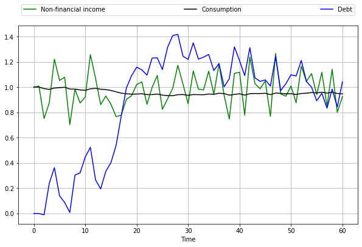
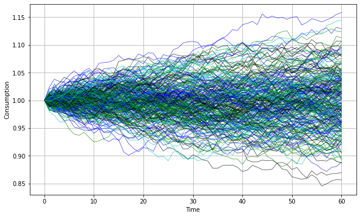
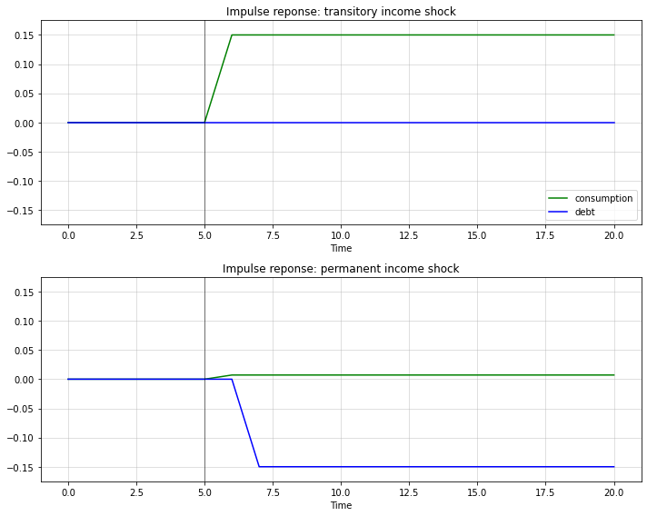

<!DOCTYPE html>

<html>
  <head>
    <meta charset="utf-8" />
    <meta name="viewport" content="width=device-width, initial-scale=1.0" />
    <title>43. The Permanent Income Model &#8212; Quantitative Economics with Python</title>
    <link rel="stylesheet" href="_static/quantecon-book-theme.css" type="text/css" />
    <link rel="stylesheet" href="_static/pygments.css" type="text/css" />
    <link rel="stylesheet" type="text/css" href="_static/togglebutton.css" />
    <link rel="stylesheet" type="text/css" href="_static/copybutton.css" />
    <link rel="stylesheet" type="text/css" href="_static/mystnb.css" />
    <link rel="stylesheet" type="text/css" href="_static/sphinx-thebe.css" />
    <link rel="stylesheet" type="text/css" href="_static/panels-main.c949a650a448cc0ae9fd3441c0e17fb0.css" />
    <link rel="stylesheet" type="text/css" href="_static/panels-variables.06eb56fa6e07937060861dad626602ad.css" />
    <script id="documentation_options" data-url_root="./" src="_static/documentation_options.js"></script>
    <script src="_static/quantecon-book-theme.js"></script>
    <script src="_static/jquery.js"></script>
    <script src="_static/underscore.js"></script>
    <script src="_static/doctools.js"></script>
    <script src="_static/language_data.js"></script>
    <script src="_static/togglebutton.js"></script>
    <script src="_static/clipboard.min.js"></script>
    <script src="_static/copybutton.js"></script>
    <script src="_static/quantecon-book-theme.js"></script>
    <script >var togglebuttonSelector = '.toggle, .admonition.dropdown, .tag_hide_input div.cell_input, .tag_hide-input div.cell_input, .tag_hide_output div.cell_output, .tag_hide-output div.cell_output, .tag_hide_cell.cell, .tag_hide-cell.cell';</script>
    <script src="_static/sphinx-book-theme.7d483ff0a819d6edff12ce0b1ead3928.js"></script>
    <script async="async" src="https://cdn.jsdelivr.net/npm/mathjax@3/es5/tex-mml-chtml.js"></script>
    <script type="text/x-mathjax-config">MathJax.Hub.Config({"TeX": {"Macros": {"argmax": "arg\\,max", "argmin": "arg\\,min"}}, "tex2jax": {"inlineMath": [["\\(", "\\)"]], "displayMath": [["\\[", "\\]"]], "processRefs": false, "processEnvironments": false}})</script>
    <script async="async" src="https://unpkg.com/thebelab@latest/lib/index.js"></script>
    <script >
        const thebe_selector = ".thebe"
        const thebe_selector_input = "pre"
        const thebe_selector_output = ".output"
    </script>
    <script async="async" src="_static/sphinx-thebe.js"></script>
    <link rel="canonical" href="https://python.quantecon.org/perm_income.html" />
    <link rel="shortcut icon" href="_static/lectures-favicon.ico"/>
    <link rel="index" title="Index" href="genindex.html" />
    <link rel="search" title="Search" href="search.html" />
    <link rel="next" title="44. Permanent Income II: LQ Techniques" href="perm_income_cons.html" />
    <link rel="prev" title="42. LQ Control: Foundations" href="lqcontrol.html" />

<!-- Normal Meta Tags -->
<meta name="author" context="Thomas J. Sargent &amp; John Stachurski" />
<meta name="keywords" content="Python, QuantEcon, Quantitative Economics, Economics, Sloan, Alfred P. Sloan Foundation, Tom J. Sargent, John Stachurski" />
<meta name="description" content=This website presents a set of lectures on quantitative economic modeling, designed and written by Thomas J. Sargent and John Stachurski. />

<!-- Twitter tags -->
<meta name="twitter:card" content="summary" />
<meta name="twitter:site" content="@quantecon" />
<meta name="twitter:title" content="The Permanent Income Model"/>
<meta name="twitter:description" content="This website presents a set of lectures on quantitative economic modeling, designed and written by Thomas J. Sargent and John Stachurski.">
<meta name="twitter:creator" content="@quantecon">
<meta name="twitter:image" content="https://assets.quantecon.org/img/qe-twitter-logo.png">

<!-- Opengraph tags -->
<meta property="og:title" content="The Permanent Income Model" />
<meta property="og:type" content="website" />
<meta property="og:url" content="https://python.quantecon.org/perm_income.html" />
<meta property="og:image" content="https://assets.quantecon.org/img/qe-og-logo.png" />
<meta property="og:description" content="This website presents a set of lectures on quantitative economic modeling, designed and written by Thomas J. Sargent and John Stachurski." />
<meta property="og:site_name" content="Quantitative Economics with Python" />

<meta name="theme-color" content="#ffffff" />


  </head>
<body>


    <span id="top"></span>

    <div class="wrapper">

        <div class="main">

            <div class="page">

                <div class="page__toc">

                    <div class="inner">

                        
                        <div class="page__toc-header">
                            On this page
                        </div>


                        <nav id="bd-toc-nav" class="page__toc-nav">

                            <ul class="nav section-nav flex-column">
                                
                                <li class="nav-item toc-entry toc-h2">
                                    <a href="#overview" class="nav-link">Overview</a>
                                </li>
                                
                                <li class="nav-item toc-entry toc-h2">
                                    <a href="#the-savings-problem" class="nav-link">The Savings Problem</a><ul class="nav section-nav flex-column">
                                        
                                <li class="nav-item toc-entry toc-h3">
                                    <a href="#preliminaries" class="nav-link">Preliminaries</a>
                                </li>
                                
                                <li class="nav-item toc-entry toc-h3">
                                    <a href="#the-decision-problem" class="nav-link">The Decision Problem</a>
                                </li>
                                
                                <li class="nav-item toc-entry toc-h3">
                                    <a href="#assumptions" class="nav-link">Assumptions</a>
                                </li>
                                
                                <li class="nav-item toc-entry toc-h3">
                                    <a href="#first-order-conditions" class="nav-link">First-Order Conditions</a>
                                </li>
                                
                                <li class="nav-item toc-entry toc-h3">
                                    <a href="#the-optimal-decision-rule" class="nav-link">The Optimal Decision Rule</a><ul class="nav section-nav flex-column">
                                        
                                <li class="nav-item toc-entry toc-h4">
                                    <a href="#responding-to-the-state" class="nav-link">Responding to the State</a>
                                </li>
                                
                                <li class="nav-item toc-entry toc-h4">
                                    <a href="#a-state-space-representation" class="nav-link">A State-Space Representation</a>
                                </li>
                                
                                <li class="nav-item toc-entry toc-h4">
                                    <a href="#a-simple-example-with-iid-income" class="nav-link">A Simple Example with IID Income</a>
                                </li>
                                
                                    </ul>
                                </li>
                                
                                    </ul>
                                </li>
                                
                                <li class="nav-item toc-entry toc-h2">
                                    <a href="#alternative-representations" class="nav-link">Alternative Representations</a><ul class="nav section-nav flex-column">
                                        
                                <li class="nav-item toc-entry toc-h3">
                                    <a href="#hall-s-representation" class="nav-link">Hall’s Representation</a>
                                </li>
                                
                                <li class="nav-item toc-entry toc-h3">
                                    <a href="#cointegration" class="nav-link">Cointegration</a>
                                </li>
                                
                                <li class="nav-item toc-entry toc-h3">
                                    <a href="#cross-sectional-implications" class="nav-link">Cross-Sectional Implications</a>
                                </li>
                                
                                <li class="nav-item toc-entry toc-h3">
                                    <a href="#impulse-response-functions" class="nav-link">Impulse Response Functions</a>
                                </li>
                                
                                <li class="nav-item toc-entry toc-h3">
                                    <a href="#moving-average-representation" class="nav-link">Moving Average Representation</a>
                                </li>
                                
                                    </ul>
                                </li>
                                
                                <li class="nav-item toc-entry toc-h2">
                                    <a href="#two-classic-examples" class="nav-link">Two Classic Examples</a><ul class="nav section-nav flex-column">
                                        
                                <li class="nav-item toc-entry toc-h3">
                                    <a href="#example-1" class="nav-link">Example 1</a>
                                </li>
                                
                                <li class="nav-item toc-entry toc-h3">
                                    <a href="#example-2" class="nav-link">Example 2</a>
                                </li>
                                
                                    </ul>
                                </li>
                                
                                <li class="nav-item toc-entry toc-h2">
                                    <a href="#further-reading" class="nav-link">Further Reading</a>
                                </li>
                                
                                <li class="nav-item toc-entry toc-h2">
                                    <a href="#appendix-the-euler-equation" class="nav-link">Appendix: The Euler Equation</a>
                                </li>
                                
                            </ul>

                            <p class="logo">
                                
                                    
                                    <a href=https://quantecon.org></a>
                                    
                                
                            </p>

                            <p class="powered">Powered by <a href="https://jupyterbook.org/">Jupyter Book</a></p>

                        </nav>

                        <div class="page__toc-footer">
                            
                            
                            <p><a href="#top"><strong>Back to top</strong></a></p>
                        </div>

                    </div>

                </div>

                <div class="page__header">

                    <div class="page__header-copy">

                        <p class="page__header-heading"><a href="intro.html">Quantitative Economics with Python</a></p>

                        <p class="page__header-subheading">The Permanent Income Model</p>

                    </div>

                    <p class="page__header-authors">Thomas J. Sargent & John Stachurski</p>

                </div> <!-- .page__header -->


                
                <main class="page__content" role="main">
                    
                    <div>
                        
  <div id="qe-notebook-header" align="right" style="text-align:right;">
        <a href="https://quantecon.org/" title="quantecon.org">
                
        </a>
</div><div class="section" id="the-permanent-income-model">
<h1><a class="toc-backref" href="#id24"><span class="section-number">43. </span><span class="target" id="index-0"></span>The Permanent Income Model</a><a class="headerlink" href="#the-permanent-income-model" title="Permalink to this headline">¶</a></h1>
<div class="contents topic" id="contents">
<span id="index-1"></span><p class="topic-title">Contents</p>
<ul class="simple">
<li><p><a class="reference internal" href="#the-permanent-income-model" id="id24">The Permanent Income Model</a></p>
<ul>
<li><p><a class="reference internal" href="#overview" id="id25">Overview</a></p></li>
<li><p><a class="reference internal" href="#the-savings-problem" id="id26">The Savings Problem</a></p></li>
<li><p><a class="reference internal" href="#alternative-representations" id="id27">Alternative Representations</a></p></li>
<li><p><a class="reference internal" href="#two-classic-examples" id="id28">Two Classic Examples</a></p></li>
<li><p><a class="reference internal" href="#further-reading" id="id29">Further Reading</a></p></li>
<li><p><a class="reference internal" href="#appendix-the-euler-equation" id="id30">Appendix: The Euler Equation</a></p></li>
</ul>
</li>
</ul>
</div>
<p>In addition to what’s in Anaconda, this lecture will need the following libraries:</p>
<div class="cell tag_hide-output docutils container">
<div class="cell_input docutils container">
<div class="highlight-ipython3 notranslate"><div class="highlight"><pre><span></span><span class="o">!</span>conda install -y quantecon
</pre></div>
</div>
</div>
<div class="cell_output docutils container">
<div class="output stream highlight-myst-ansi notranslate"><div class="highlight"><pre><span></span>Collecting package metadata (current_repodata.json): - 
</pre></div>
</div>
<div class="output stream highlight-myst-ansi notranslate"><div class="highlight"><pre><span></span>\ 
</pre></div>
</div>
<div class="output stream highlight-myst-ansi notranslate"><div class="highlight"><pre><span></span>| 
</pre></div>
</div>
<div class="output stream highlight-myst-ansi notranslate"><div class="highlight"><pre><span></span>/ 
</pre></div>
</div>
<div class="output stream highlight-myst-ansi notranslate"><div class="highlight"><pre><span></span>- 
</pre></div>
</div>
<div class="output stream highlight-myst-ansi notranslate"><div class="highlight"><pre><span></span>\ 
</pre></div>
</div>
<div class="output stream highlight-myst-ansi notranslate"><div class="highlight"><pre><span></span>| 
</pre></div>
</div>
<div class="output stream highlight-myst-ansi notranslate"><div class="highlight"><pre><span></span>/ 
</pre></div>
</div>
<div class="output stream highlight-myst-ansi notranslate"><div class="highlight"><pre><span></span>- 
</pre></div>
</div>
<div class="output stream highlight-myst-ansi notranslate"><div class="highlight"><pre><span></span>\ 
</pre></div>
</div>
<div class="output stream highlight-myst-ansi notranslate"><div class="highlight"><pre><span></span>| 
</pre></div>
</div>
<div class="output stream highlight-myst-ansi notranslate"><div class="highlight"><pre><span></span>/ 
</pre></div>
</div>
<div class="output stream highlight-myst-ansi notranslate"><div class="highlight"><pre><span></span>- 
</pre></div>
</div>
<div class="output stream highlight-myst-ansi notranslate"><div class="highlight"><pre><span></span>\ 
</pre></div>
</div>
<div class="output stream highlight-myst-ansi notranslate"><div class="highlight"><pre><span></span>done
Solving environment: / 
</pre></div>
</div>
<div class="output stream highlight-myst-ansi notranslate"><div class="highlight"><pre><span></span>- 
</pre></div>
</div>
<div class="output stream highlight-myst-ansi notranslate"><div class="highlight"><pre><span></span>\ 
</pre></div>
</div>
<div class="output stream highlight-myst-ansi notranslate"><div class="highlight"><pre><span></span>| 
</pre></div>
</div>
<div class="output stream highlight-myst-ansi notranslate"><div class="highlight"><pre><span></span>/ 
</pre></div>
</div>
<div class="output stream highlight-myst-ansi notranslate"><div class="highlight"><pre><span></span>- 
</pre></div>
</div>
<div class="output stream highlight-myst-ansi notranslate"><div class="highlight"><pre><span></span>\ 
</pre></div>
</div>
<div class="output stream highlight-myst-ansi notranslate"><div class="highlight"><pre><span></span>| 
</pre></div>
</div>
<div class="output stream highlight-myst-ansi notranslate"><div class="highlight"><pre><span></span>/ 
</pre></div>
</div>
<div class="output stream highlight-myst-ansi notranslate"><div class="highlight"><pre><span></span>- 
</pre></div>
</div>
<div class="output stream highlight-myst-ansi notranslate"><div class="highlight"><pre><span></span>\ 
</pre></div>
</div>
<div class="output stream highlight-myst-ansi notranslate"><div class="highlight"><pre><span></span>| 
</pre></div>
</div>
<div class="output stream highlight-myst-ansi notranslate"><div class="highlight"><pre><span></span>/ 
</pre></div>
</div>
<div class="output stream highlight-myst-ansi notranslate"><div class="highlight"><pre><span></span>- 
</pre></div>
</div>
<div class="output stream highlight-myst-ansi notranslate"><div class="highlight"><pre><span></span>\ 
</pre></div>
</div>
<div class="output stream highlight-myst-ansi notranslate"><div class="highlight"><pre><span></span>| 
</pre></div>
</div>
<div class="output stream highlight-myst-ansi notranslate"><div class="highlight"><pre><span></span>/ 
</pre></div>
</div>
<div class="output stream highlight-myst-ansi notranslate"><div class="highlight"><pre><span></span>- 
</pre></div>
</div>
<div class="output stream highlight-myst-ansi notranslate"><div class="highlight"><pre><span></span>\ 
</pre></div>
</div>
<div class="output stream highlight-myst-ansi notranslate"><div class="highlight"><pre><span></span>| 
</pre></div>
</div>
<div class="output stream highlight-myst-ansi notranslate"><div class="highlight"><pre><span></span>/ 
</pre></div>
</div>
<div class="output stream highlight-myst-ansi notranslate"><div class="highlight"><pre><span></span>- 
</pre></div>
</div>
<div class="output stream highlight-myst-ansi notranslate"><div class="highlight"><pre><span></span>\ 
</pre></div>
</div>
<div class="output stream highlight-myst-ansi notranslate"><div class="highlight"><pre><span></span>| 
</pre></div>
</div>
<div class="output stream highlight-myst-ansi notranslate"><div class="highlight"><pre><span></span>/ 
</pre></div>
</div>
<div class="output stream highlight-myst-ansi notranslate"><div class="highlight"><pre><span></span>- 
</pre></div>
</div>
<div class="output stream highlight-myst-ansi notranslate"><div class="highlight"><pre><span></span>\ 
</pre></div>
</div>
<div class="output stream highlight-myst-ansi notranslate"><div class="highlight"><pre><span></span>| 
</pre></div>
</div>
<div class="output stream highlight-myst-ansi notranslate"><div class="highlight"><pre><span></span>/ 
</pre></div>
</div>
<div class="output stream highlight-myst-ansi notranslate"><div class="highlight"><pre><span></span>done
</pre></div>
</div>
<div class="output stream highlight-myst-ansi notranslate"><div class="highlight"><pre><span></span># All requested packages already installed.
</pre></div>
</div>
</div>
</div>
<div class="section" id="overview">
<h2><a class="toc-backref" href="#id25"><span class="section-number">43.1. </span>Overview</a><a class="headerlink" href="#overview" title="Permalink to this headline">¶</a></h2>
<p>This lecture describes a rational expectations version of the famous permanent income model of Milton Friedman <span id="id1">[<a class="reference internal" href="zreferences.html#id121"><span>Fri56</span></a>]</span>.</p>
<p>Robert Hall cast Friedman’s model within a linear-quadratic setting <span id="id2">[<a class="reference internal" href="zreferences.html#id122"><span>Hal78</span></a>]</span>.</p>
<p>Like Hall, we formulate an infinite-horizon linear-quadratic savings problem.</p>
<p>We use the model as a vehicle for illustrating</p>
<ul class="simple">
<li><p>alternative formulations of the <em>state</em> of a dynamic system</p></li>
<li><p>the idea of <em>cointegration</em></p></li>
<li><p>impulse response functions</p></li>
<li><p>the idea that changes in consumption are useful as predictors of movements in income</p></li>
</ul>
<p>Background readings on the linear-quadratic-Gaussian permanent income model are Hall’s  <span id="id3">[<a class="reference internal" href="zreferences.html#id122"><span>Hal78</span></a>]</span>  and chapter 2 of  <span id="id4">[<a class="reference internal" href="zreferences.html#id143"><span>LS18</span></a>]</span>.</p>
<p>Let’s start with some imports</p>
<div class="cell docutils container">
<div class="cell_input docutils container">
<div class="highlight-ipython3 notranslate"><div class="highlight"><pre><span></span><span class="o">%</span><span class="k">matplotlib</span> inline
<span class="kn">import</span> <span class="nn">matplotlib.pyplot</span> <span class="k">as</span> <span class="nn">plt</span>
<span class="n">plt</span><span class="o">.</span><span class="n">rcParams</span><span class="p">[</span><span class="s2">&quot;figure.figsize&quot;</span><span class="p">]</span> <span class="o">=</span> <span class="p">(</span><span class="mi">11</span><span class="p">,</span> <span class="mi">5</span><span class="p">)</span>  <span class="c1">#set default figure size</span>
<span class="kn">import</span> <span class="nn">numpy</span> <span class="k">as</span> <span class="nn">np</span>
<span class="kn">import</span> <span class="nn">random</span>
<span class="kn">from</span> <span class="nn">numba</span> <span class="kn">import</span> <span class="n">njit</span>
</pre></div>
</div>
</div>
</div>
</div>
<div class="section" id="the-savings-problem">
<h2><a class="toc-backref" href="#id26"><span class="section-number">43.2. </span>The Savings Problem</a><a class="headerlink" href="#the-savings-problem" title="Permalink to this headline">¶</a></h2>
<p id="index-2">In this section, we state and solve the savings and consumption problem faced
by the consumer.</p>
<div class="section" id="preliminaries">
<h3><span class="section-number">43.2.1. </span>Preliminaries<a class="headerlink" href="#preliminaries" title="Permalink to this headline">¶</a></h3>
<p>We use a class of stochastic processes called
<a class="reference external" href="https://en.wikipedia.org/wiki/Martingale_%28probability_theory%29">martingales</a>.</p>
<p>A discrete-time martingale is a stochastic process (i.e., a  sequence of random variables)
<span class="math notranslate nohighlight">\(\{X_t\}\)</span> with finite mean at each <span class="math notranslate nohighlight">\(t\)</span> and satisfying</p>
<div class="math notranslate nohighlight">
\[
\mathbb{E}_t [X_{t+1} ] = X_t, \qquad t = 0, 1, 2, \ldots
\]</div>
<p>Here <span class="math notranslate nohighlight">\(\mathbb{E}_t := \mathbb{E}[ \cdot \,|\, \mathcal{F}_t]\)</span> is a conditional mathematical  expectation conditional on the time <span class="math notranslate nohighlight">\(t\)</span>
<em>information set</em> <span class="math notranslate nohighlight">\(\mathcal{F}_t\)</span>.</p>
<p>The latter is just a collection of random variables that the modeler declares
to be visible at <span class="math notranslate nohighlight">\(t\)</span>.</p>
<ul class="simple">
<li><p>When not explicitly defined, it is usually understood that <span class="math notranslate nohighlight">\(\mathcal{F}_t = \{X_t, X_{t-1}, \ldots, X_0\}\)</span>.</p></li>
</ul>
<p>Martingales have the feature that the history of past outcomes provides no predictive power for changes between current and future outcomes.</p>
<p>For example, the current wealth of a gambler engaged in a “fair game” has this
property.</p>
<p>One common class of martingales is the family of <em>random walks</em>.</p>
<p>A <strong>random walk</strong> is  a stochastic process <span class="math notranslate nohighlight">\(\{X_t\}\)</span> that satisfies</p>
<div class="math notranslate nohighlight">
\[
X_{t+1} = X_t + w_{t+1}
\]</div>
<p>for some IID zero mean <em>innovation</em> sequence <span class="math notranslate nohighlight">\(\{w_t\}\)</span>.</p>
<p>Evidently, <span class="math notranslate nohighlight">\(X_t\)</span> can also be expressed as</p>
<div class="math notranslate nohighlight">
\[
X_t = \sum_{j=1}^t w_j + X_0
\]</div>
<p>Not every martingale arises as a random walk (see, for example, <a class="reference external" href="https://en.wikipedia.org/wiki/Wald%27s_martingale">Wald’s martingale</a>).</p>
</div>
<div class="section" id="the-decision-problem">
<h3><span class="section-number">43.2.2. </span>The Decision Problem<a class="headerlink" href="#the-decision-problem" title="Permalink to this headline">¶</a></h3>
<p>A consumer has preferences over consumption streams that are ordered by the utility functional</p>
<div class="math notranslate nohighlight" id="equation-sprob1">
<span class="eqno">(43.1)<a class="headerlink" href="#equation-sprob1" title="Permalink to this equation">¶</a></span>\[\mathbb{E}_0 \left[ \sum_{t=0}^\infty \beta^t u(c_t) \right]\]</div>
<p>where</p>
<ul class="simple">
<li><p><span class="math notranslate nohighlight">\(\mathbb{E}_t\)</span> is the mathematical expectation conditioned on the consumer’s time <span class="math notranslate nohighlight">\(t\)</span> information</p></li>
<li><p><span class="math notranslate nohighlight">\(c_t\)</span> is time <span class="math notranslate nohighlight">\(t\)</span> consumption</p></li>
<li><p><span class="math notranslate nohighlight">\(u\)</span> is a strictly concave one-period utility function</p></li>
<li><p><span class="math notranslate nohighlight">\(\beta \in (0,1)\)</span> is a discount factor</p></li>
</ul>
<p>The consumer maximizes <a class="reference internal" href="#equation-sprob1">(43.1)</a> by choosing a consumption, borrowing plan <span class="math notranslate nohighlight">\(\{c_t, b_{t+1}\}_{t=0}^\infty\)</span> subject to the sequence of budget constraints</p>
<div class="math notranslate nohighlight" id="equation-sprob2">
<span class="eqno">(43.2)<a class="headerlink" href="#equation-sprob2" title="Permalink to this equation">¶</a></span>\[c_t + b_t = \frac{1}{1 + r} b_{t+1} +  y_t   \quad t \geq 0\]</div>
<p>Here</p>
<ul class="simple">
<li><p><span class="math notranslate nohighlight">\(y_t\)</span> is an exogenous endowment process.</p></li>
<li><p><span class="math notranslate nohighlight">\(r &gt; 0\)</span> is a time-invariant risk-free net interest rate.</p></li>
<li><p><span class="math notranslate nohighlight">\(b_t\)</span> is one-period risk-free debt maturing at <span class="math notranslate nohighlight">\(t\)</span>.</p></li>
</ul>
<p>The consumer also faces initial conditions <span class="math notranslate nohighlight">\(b_0\)</span> and <span class="math notranslate nohighlight">\(y_0\)</span>, which can be fixed or random.</p>
</div>
<div class="section" id="assumptions">
<h3><span class="section-number">43.2.3. </span>Assumptions<a class="headerlink" href="#assumptions" title="Permalink to this headline">¶</a></h3>
<p>For the remainder of this lecture, we follow Friedman and Hall in assuming that <span class="math notranslate nohighlight">\((1 + r)^{-1} = \beta\)</span>.</p>
<p>Regarding the endowment process, we assume it has the <a class="reference internal" href="linear_models.html"><span class="doc">state-space representation</span></a></p>
<div class="math notranslate nohighlight" id="equation-sprob15ab">
<span class="eqno">(43.3)<a class="headerlink" href="#equation-sprob15ab" title="Permalink to this equation">¶</a></span>\[\begin{split}\begin{aligned}
    z_{t+1} &amp; = A z_t + C w_{t+1}
    \\
    y_t &amp; = U  z_t
\end{aligned}\end{split}\]</div>
<p>where</p>
<ul class="simple">
<li><p><span class="math notranslate nohighlight">\(\{w_t\}\)</span> is an IID vector process with <span class="math notranslate nohighlight">\(\mathbb{E} w_t = 0\)</span> and <span class="math notranslate nohighlight">\(\mathbb{E} w_t w_t' = I\)</span>.</p></li>
<li><p>The <a class="reference internal" href="linear_algebra.html#la-neumann-remarks"><span class="std std-ref">spectral radius</span></a> of <span class="math notranslate nohighlight">\(A\)</span> satisfies <span class="math notranslate nohighlight">\(\rho(A) &lt; \sqrt{1/\beta}\)</span>.</p></li>
<li><p><span class="math notranslate nohighlight">\(U\)</span> is a selection vector that pins down <span class="math notranslate nohighlight">\(y_t\)</span> as a particular linear combination of components of <span class="math notranslate nohighlight">\(z_t\)</span>.</p></li>
</ul>
<p>The restriction on <span class="math notranslate nohighlight">\(\rho(A)\)</span> prevents income from growing so fast that discounted geometric sums of some quadratic forms to be described below become infinite.</p>
<p>Regarding preferences, we assume the quadratic utility function</p>
<div class="math notranslate nohighlight">
\[
u(c_t) =  - (c_t - \gamma)^2
\]</div>
<p>where <span class="math notranslate nohighlight">\(\gamma\)</span> is a bliss level of consumption.</p>
<div class="admonition note">
<p class="admonition-title">Note</p>
<p>Along with this quadratic utility specification, we allow consumption to be negative.  However, by choosing parameters appropriately, we can make the probability that the model generates negative consumption paths over finite time horizons as low as desired.</p>
</div>
<p>Finally, we impose the <em>no Ponzi scheme</em> condition</p>
<div class="math notranslate nohighlight" id="equation-sprob3">
<span class="eqno">(43.4)<a class="headerlink" href="#equation-sprob3" title="Permalink to this equation">¶</a></span>\[\mathbb{E}_0 \left[ \sum_{t=0}^\infty \beta^t b_t^2 \right] &lt; \infty\]</div>
<p>This condition rules out an always-borrow scheme that would allow the consumer to enjoy bliss consumption forever.</p>
</div>
<div class="section" id="first-order-conditions">
<h3><span class="section-number">43.2.4. </span>First-Order Conditions<a class="headerlink" href="#first-order-conditions" title="Permalink to this headline">¶</a></h3>
<p>First-order conditions for maximizing <a class="reference internal" href="#equation-sprob1">(43.1)</a> subject to <a class="reference internal" href="#equation-sprob2">(43.2)</a> are</p>
<div class="math notranslate nohighlight" id="equation-sprob4">
<span class="eqno">(43.5)<a class="headerlink" href="#equation-sprob4" title="Permalink to this equation">¶</a></span>\[\mathbb{E}_t [u'(c_{t+1})] = u'(c_t) , \qquad t = 0, 1, \ldots\]</div>
<p>These optimality conditions are also known as  <em>Euler equations</em>.</p>
<p>If you’re not sure where they come from, you can find a proof sketch in the
<a class="reference internal" href="#perm-income-appendix"><span class="std std-ref">appendix</span></a>.</p>
<p>With our quadratic preference specification, <a class="reference internal" href="#equation-sprob4">(43.5)</a> has the striking implication that consumption follows a martingale:</p>
<div class="math notranslate nohighlight" id="equation-sprob5">
<span class="eqno">(43.6)<a class="headerlink" href="#equation-sprob5" title="Permalink to this equation">¶</a></span>\[\mathbb{E}_t [c_{t+1}] = c_t\]</div>
<p>(In fact, quadratic preferences are <em>necessary</em> for this conclusion <a class="footnote-reference brackets" href="#f2" id="id5">1</a>.)</p>
<p>One way to interpret <a class="reference internal" href="#equation-sprob5">(43.6)</a> is that consumption will change only when
“new information” about permanent income is revealed.</p>
<p>These ideas will be clarified below.</p>
</div>
<div class="section" id="the-optimal-decision-rule">
<span id="odr-pi"></span><h3><span class="section-number">43.2.5. </span>The Optimal Decision Rule<a class="headerlink" href="#the-optimal-decision-rule" title="Permalink to this headline">¶</a></h3>
<p>Now let’s deduce the optimal decision rule <a class="footnote-reference brackets" href="#fod" id="id6">2</a>.</p>
<div class="admonition note">
<p class="admonition-title">Note</p>
<p>One way to solve the consumer’s problem is to apply <em>dynamic programming</em>
as in <a class="reference internal" href="lqcontrol.html"><span class="doc">this lecture</span></a>.  We do this later. But first we use
an alternative approach that is revealing and shows the work that dynamic
programming does for us behind the scenes.</p>
</div>
<p>In doing so, we need to combine</p>
<ol class="simple">
<li><p>the optimality condition <a class="reference internal" href="#equation-sprob5">(43.6)</a></p></li>
<li><p>the period-by-period budget constraint <a class="reference internal" href="#equation-sprob2">(43.2)</a>, and</p></li>
<li><p>the boundary condition <a class="reference internal" href="#equation-sprob3">(43.4)</a></p></li>
</ol>
<p>To accomplish this, observe first that <a class="reference internal" href="#equation-sprob3">(43.4)</a> implies <span class="math notranslate nohighlight">\(\lim_{t \to \infty} \beta^{\frac{t}{2}} b_{t+1}= 0\)</span>.</p>
<p>Using this restriction on the debt path and solving <a class="reference internal" href="#equation-sprob2">(43.2)</a> forward yields</p>
<div class="math notranslate nohighlight" id="equation-sprob6">
<span class="eqno">(43.7)<a class="headerlink" href="#equation-sprob6" title="Permalink to this equation">¶</a></span>\[b_t = \sum_{j=0}^\infty \beta^j (y_{t+j} - c_{t+j})\]</div>
<p>Take conditional expectations on both sides of <a class="reference internal" href="#equation-sprob6">(43.7)</a> and use the martingale property of consumption and the <em>law of iterated expectations</em> to deduce</p>
<div class="math notranslate nohighlight" id="equation-sprob7">
<span class="eqno">(43.8)<a class="headerlink" href="#equation-sprob7" title="Permalink to this equation">¶</a></span>\[b_t = \sum_{j=0}^\infty \beta^j \mathbb{E}_t [y_{t+j}] - \frac{c_t}{1-\beta}\]</div>
<p>Expressed in terms of <span class="math notranslate nohighlight">\(c_t\)</span> we get</p>
<div class="math notranslate nohighlight" id="equation-sprob8">
<span class="eqno">(43.9)<a class="headerlink" href="#equation-sprob8" title="Permalink to this equation">¶</a></span>\[c_t
 = (1-\beta) \left[ \sum_{j=0}^\infty \beta^j \mathbb{E}_t [y_{t+j}] - b_t\right]
 = {r \over 1+r} \left[ \sum_{j=0}^\infty \beta^j \mathbb{E}_t [y_{t+j}] - b_t\right]\]</div>
<p>where the last equality uses <span class="math notranslate nohighlight">\((1 + r) \beta = 1\)</span>.</p>
<p>These last two equations assert that consumption equals <em>economic income</em></p>
<ul class="simple">
<li><p><strong>financial wealth</strong> equals <span class="math notranslate nohighlight">\(-b_t\)</span></p></li>
<li><p><strong>non-financial wealth</strong> equals <span class="math notranslate nohighlight">\(\sum_{j=0}^\infty \beta^j \mathbb{E}_t [y_{t+j}]\)</span></p></li>
<li><p><strong>total wealth</strong> equals the sum of financial and non-financial wealth</p></li>
<li><p>a <strong>marginal propensity to consume out of total wealth</strong> equals the  interest factor <span class="math notranslate nohighlight">\(\frac{r}{1+r}\)</span></p></li>
<li><p><strong>economic income</strong> equals</p>
<ul>
<li><p>a constant marginal propensity to consume  times the sum of non-financial wealth and financial wealth</p></li>
<li><p>the amount the consumer can consume while leaving its wealth intact</p></li>
</ul>
</li>
</ul>
<div class="section" id="responding-to-the-state">
<h4><span class="section-number">43.2.5.1. </span>Responding to the State<a class="headerlink" href="#responding-to-the-state" title="Permalink to this headline">¶</a></h4>
<p>The <em>state</em> vector confronting the consumer at <span class="math notranslate nohighlight">\(t\)</span> is <span class="math notranslate nohighlight">\(\begin{bmatrix} b_t &amp; z_t \end{bmatrix}\)</span>.</p>
<p>Here</p>
<ul class="simple">
<li><p><span class="math notranslate nohighlight">\(z_t\)</span> is an <em>exogenous</em> component, unaffected by consumer behavior.</p></li>
<li><p><span class="math notranslate nohighlight">\(b_t\)</span> is an <em>endogenous</em> component (since it depends on the decision rule).</p></li>
</ul>
<p>Note that <span class="math notranslate nohighlight">\(z_t\)</span> contains all variables useful for forecasting the consumer’s future endowment.</p>
<p>It is plausible that current decisions <span class="math notranslate nohighlight">\(c_t\)</span> and <span class="math notranslate nohighlight">\(b_{t+1}\)</span> should
be expressible as functions of <span class="math notranslate nohighlight">\(z_t\)</span> and <span class="math notranslate nohighlight">\(b_t\)</span>.</p>
<p>This is indeed the case.</p>
<p>In fact, from <a class="reference internal" href="linear_models.html#lm-fgs"><span class="std std-ref">this discussion</span></a>, we see that</p>
<div class="math notranslate nohighlight">
\[
\sum_{j=0}^\infty \beta^j \mathbb{E}_t [y_{t+j}]
= \mathbb{E}_t \left[ \sum_{j=0}^\infty \beta^j y_{t+j} \right]
= U(I - \beta A)^{-1} z_t
\]</div>
<p>Combining this with <a class="reference internal" href="#equation-sprob8">(43.9)</a> gives</p>
<div class="math notranslate nohighlight" id="equation-pi-cpa">
<span class="eqno">(43.10)<a class="headerlink" href="#equation-pi-cpa" title="Permalink to this equation">¶</a></span>\[c_t
 = {r \over 1+r}
     \left[
         U(I - \beta A)^{-1} z_t - b_t
     \right]\]</div>
<p>Using this equality to eliminate <span class="math notranslate nohighlight">\(c_t\)</span> in the budget constraint <a class="reference internal" href="#equation-sprob2">(43.2)</a> gives</p>
<div class="math notranslate nohighlight">
\[\begin{split}
\begin{aligned}
    b_{t+1}
    &amp; = (1 + r) (b_t + c_t - y_t)
    \\
    &amp; = (1 + r) b_t + r [ U(I - \beta A)^{-1} z_t - b_t]  - (1+r) U z_t
    \\
    &amp; = b_t +  U [ r(I - \beta A)^{-1}  - (1+r) I ]  z_t
    \\
    &amp; = b_t +  U (I - \beta A)^{-1} (A - I)   z_t
\end{aligned}
\end{split}\]</div>
<p>To get from the second last to the last expression in this chain of equalities is not trivial.</p>
<p>A key is to use the fact that <span class="math notranslate nohighlight">\((1 + r) \beta = 1\)</span> and <span class="math notranslate nohighlight">\((I - \beta A)^{-1} = \sum_{j=0}^{\infty} \beta^j A^j\)</span>.</p>
<p>We’ve now successfully written <span class="math notranslate nohighlight">\(c_t\)</span> and <span class="math notranslate nohighlight">\(b_{t+1}\)</span> as functions of <span class="math notranslate nohighlight">\(b_t\)</span> and <span class="math notranslate nohighlight">\(z_t\)</span>.</p>
</div>
<div class="section" id="a-state-space-representation">
<h4><span class="section-number">43.2.5.2. </span>A State-Space Representation<a class="headerlink" href="#a-state-space-representation" title="Permalink to this headline">¶</a></h4>
<p>We can summarize our dynamics in the form of a linear state-space system governing consumption, debt and income:</p>
<div class="math notranslate nohighlight" id="equation-pi-ssr">
<span class="eqno">(43.11)<a class="headerlink" href="#equation-pi-ssr" title="Permalink to this equation">¶</a></span>\[\begin{split}\begin{aligned}
  z_{t+1} &amp; = A z_t + C w_{t+1} \\
  b_{t+1} &amp; = b_t + U [ (I -\beta A)^{-1} (A - I) ] z_t \\
      y_t &amp; = U z_t \\
      c_t &amp; = (1-\beta) [ U(I-\beta A)^{-1} z_t - b_t ]
\end{aligned}\end{split}\]</div>
<p>To write this more succinctly, let</p>
<div class="math notranslate nohighlight">
\[\begin{split}
x_t =
\begin{bmatrix}
    z_t\\
    b_t
\end{bmatrix},
\quad
\tilde A =
\begin{bmatrix}
    A &amp; 0 \\
    U(I-\beta A)^{-1}(A-I) &amp; 1
 \end{bmatrix},
 \quad
\tilde C =
\begin{bmatrix}
    C\\
    0
\end{bmatrix}
\end{split}\]</div>
<p>and</p>
<div class="math notranslate nohighlight">
\[\begin{split}
\tilde U =
\begin{bmatrix}
    U &amp; 0 \\
    (1-\beta) U (I - \beta A)^{-1} &amp; -(1-\beta)
\end{bmatrix}, \quad
\tilde y_t =
\begin{bmatrix}
      y_t\\
      c_t
  \end{bmatrix}
\end{split}\]</div>
<p>Then we can express equation  <a class="reference internal" href="#equation-pi-ssr">(43.11)</a> as</p>
<div class="math notranslate nohighlight" id="equation-pi-stsp">
<span class="eqno">(43.12)<a class="headerlink" href="#equation-pi-stsp" title="Permalink to this equation">¶</a></span>\[\begin{split}\begin{aligned}
  x_{t+1} &amp; = \tilde A x_t + \tilde C w_{t+1} \\
  \tilde y_t &amp; = \tilde U x_t
\end{aligned}\end{split}\]</div>
<p>We can use the following formulas from <a class="reference internal" href="linear_models.html"><span class="doc">linear state space models</span></a> to compute population mean <span class="math notranslate nohighlight">\(\mu_t = \mathbb{E}    x_t\)</span> and covariance <span class="math notranslate nohighlight">\(\Sigma_t := \mathbb{E} [ (x_t - \mu_t) (x_t - \mu_t)']\)</span></p>
<div class="math notranslate nohighlight" id="equation-lss-mut-perm-income">
<span class="eqno">(43.13)<a class="headerlink" href="#equation-lss-mut-perm-income" title="Permalink to this equation">¶</a></span>\[\mu_{t+1} = \tilde A \mu_t
\quad \text{with} \quad \mu_0 \text{ given}\]</div>
<div class="math notranslate nohighlight" id="equation-eqsigmalaw">
<span class="eqno">(43.14)<a class="headerlink" href="#equation-eqsigmalaw" title="Permalink to this equation">¶</a></span>\[\Sigma_{t+1}  = \tilde A  \Sigma_t \tilde A' + \tilde C \tilde C'
\quad \text{with} \quad \Sigma_0 \text{ given}\]</div>
<p>We can then compute the mean and covariance of <span class="math notranslate nohighlight">\(\tilde y_t\)</span> from</p>
<div class="math notranslate nohighlight" id="equation-eqymoments">
<span class="eqno">(43.15)<a class="headerlink" href="#equation-eqymoments" title="Permalink to this equation">¶</a></span>\[\begin{split}\begin{aligned}
\mu_{y,t} = \tilde U \mu_t \\
\Sigma_{y,t} = \tilde U \Sigma_t \tilde U'
\end{aligned}\end{split}\]</div>
</div>
<div class="section" id="a-simple-example-with-iid-income">
<h4><span class="section-number">43.2.5.3. </span>A Simple Example with IID Income<a class="headerlink" href="#a-simple-example-with-iid-income" title="Permalink to this headline">¶</a></h4>
<p>To gain some preliminary intuition on the implications of <a class="reference internal" href="#equation-pi-ssr">(43.11)</a>, let’s look at a highly stylized example where income is just IID.</p>
<p>(Later examples will investigate more realistic income streams.)</p>
<p>In particular, let <span class="math notranslate nohighlight">\(\{w_t\}_{t = 1}^{\infty}\)</span> be IID and scalar standard normal, and let</p>
<div class="math notranslate nohighlight">
\[\begin{split}
z_t =
\begin{bmatrix}
    z^1_t \\
    1
\end{bmatrix},
\quad
A =
\begin{bmatrix}
    0 &amp; 0 \\
    0 &amp; 1
\end{bmatrix},
\quad
U =
\begin{bmatrix}
    1 &amp; \mu
\end{bmatrix},
\quad
C =
\begin{bmatrix}
    \sigma \\
    0
\end{bmatrix}
\end{split}\]</div>
<p>Finally, let <span class="math notranslate nohighlight">\(b_0 = z^1_0 = 0\)</span>.</p>
<p>Under these assumptions, we have <span class="math notranslate nohighlight">\(y_t = \mu + \sigma w_t \sim N(\mu, \sigma^2)\)</span>.</p>
<p>Further, if you work through the state space representation, you will see that</p>
<div class="math notranslate nohighlight">
\[\begin{split}
\begin{aligned}
    b_t &amp; = - \sigma \sum_{j=1}^{t-1} w_j
    \\
    c_t &amp; = \mu + (1 - \beta) \sigma \sum_{j=1}^t w_j
\end{aligned}
\end{split}\]</div>
<p>Thus income is IID and debt and consumption are both Gaussian random walks.</p>
<p>Defining assets as <span class="math notranslate nohighlight">\(-b_t\)</span>, we see that assets are just the cumulative sum of unanticipated incomes prior to the present date.</p>
<p>The next figure shows a typical realization with <span class="math notranslate nohighlight">\(r = 0.05\)</span>, <span class="math notranslate nohighlight">\(\mu = 1\)</span>, and <span class="math notranslate nohighlight">\(\sigma = 0.15\)</span></p>
<div class="cell docutils container">
<div class="cell_input docutils container">
<div class="highlight-ipython3 notranslate"><div class="highlight"><pre><span></span><span class="n">r</span> <span class="o">=</span> <span class="mf">0.05</span>
<span class="n">β</span> <span class="o">=</span> <span class="mi">1</span> <span class="o">/</span> <span class="p">(</span><span class="mi">1</span> <span class="o">+</span> <span class="n">r</span><span class="p">)</span>
<span class="n">σ</span> <span class="o">=</span> <span class="mf">0.15</span>
<span class="n">μ</span> <span class="o">=</span> <span class="mi">1</span>
<span class="n">T</span> <span class="o">=</span> <span class="mi">60</span>

<span class="nd">@njit</span>
<span class="k">def</span> <span class="nf">time_path</span><span class="p">(</span><span class="n">T</span><span class="p">):</span>
    <span class="n">w</span> <span class="o">=</span> <span class="n">np</span><span class="o">.</span><span class="n">random</span><span class="o">.</span><span class="n">randn</span><span class="p">(</span><span class="n">T</span><span class="o">+</span><span class="mi">1</span><span class="p">)</span>  <span class="c1"># w_0, w_1, ..., w_T</span>
    <span class="n">w</span><span class="p">[</span><span class="mi">0</span><span class="p">]</span> <span class="o">=</span> <span class="mi">0</span>
    <span class="n">b</span> <span class="o">=</span> <span class="n">np</span><span class="o">.</span><span class="n">zeros</span><span class="p">(</span><span class="n">T</span><span class="o">+</span><span class="mi">1</span><span class="p">)</span>
    <span class="k">for</span> <span class="n">t</span> <span class="ow">in</span> <span class="nb">range</span><span class="p">(</span><span class="mi">1</span><span class="p">,</span> <span class="n">T</span><span class="o">+</span><span class="mi">1</span><span class="p">):</span>
        <span class="n">b</span><span class="p">[</span><span class="n">t</span><span class="p">]</span> <span class="o">=</span> <span class="n">w</span><span class="p">[</span><span class="mi">1</span><span class="p">:</span><span class="n">t</span><span class="p">]</span><span class="o">.</span><span class="n">sum</span><span class="p">()</span>
    <span class="n">b</span> <span class="o">=</span> <span class="o">-</span><span class="n">σ</span> <span class="o">*</span> <span class="n">b</span>
    <span class="n">c</span> <span class="o">=</span> <span class="n">μ</span> <span class="o">+</span> <span class="p">(</span><span class="mi">1</span> <span class="o">-</span> <span class="n">β</span><span class="p">)</span> <span class="o">*</span> <span class="p">(</span><span class="n">σ</span> <span class="o">*</span> <span class="n">w</span> <span class="o">-</span> <span class="n">b</span><span class="p">)</span>
    <span class="k">return</span> <span class="n">w</span><span class="p">,</span> <span class="n">b</span><span class="p">,</span> <span class="n">c</span>

<span class="n">w</span><span class="p">,</span> <span class="n">b</span><span class="p">,</span> <span class="n">c</span> <span class="o">=</span> <span class="n">time_path</span><span class="p">(</span><span class="n">T</span><span class="p">)</span>

<span class="n">fig</span><span class="p">,</span> <span class="n">ax</span> <span class="o">=</span> <span class="n">plt</span><span class="o">.</span><span class="n">subplots</span><span class="p">(</span><span class="n">figsize</span><span class="o">=</span><span class="p">(</span><span class="mi">10</span><span class="p">,</span> <span class="mi">6</span><span class="p">))</span>

<span class="n">ax</span><span class="o">.</span><span class="n">plot</span><span class="p">(</span><span class="n">μ</span> <span class="o">+</span> <span class="n">σ</span> <span class="o">*</span> <span class="n">w</span><span class="p">,</span> <span class="s1">&#39;g-&#39;</span><span class="p">,</span> <span class="n">label</span><span class="o">=</span><span class="s2">&quot;Non-financial income&quot;</span><span class="p">)</span>
<span class="n">ax</span><span class="o">.</span><span class="n">plot</span><span class="p">(</span><span class="n">c</span><span class="p">,</span> <span class="s1">&#39;k-&#39;</span><span class="p">,</span> <span class="n">label</span><span class="o">=</span><span class="s2">&quot;Consumption&quot;</span><span class="p">)</span>
<span class="n">ax</span><span class="o">.</span><span class="n">plot</span><span class="p">(</span> <span class="n">b</span><span class="p">,</span> <span class="s1">&#39;b-&#39;</span><span class="p">,</span> <span class="n">label</span><span class="o">=</span><span class="s2">&quot;Debt&quot;</span><span class="p">)</span>
<span class="n">ax</span><span class="o">.</span><span class="n">legend</span><span class="p">(</span><span class="n">ncol</span><span class="o">=</span><span class="mi">3</span><span class="p">,</span> <span class="n">mode</span><span class="o">=</span><span class="s1">&#39;expand&#39;</span><span class="p">,</span> <span class="n">bbox_to_anchor</span><span class="o">=</span><span class="p">(</span><span class="mf">0.</span><span class="p">,</span> <span class="mf">1.02</span><span class="p">,</span> <span class="mf">1.</span><span class="p">,</span> <span class="o">.</span><span class="mi">102</span><span class="p">))</span>
<span class="n">ax</span><span class="o">.</span><span class="n">grid</span><span class="p">()</span>
<span class="n">ax</span><span class="o">.</span><span class="n">set_xlabel</span><span class="p">(</span><span class="s1">&#39;Time&#39;</span><span class="p">)</span>

<span class="n">plt</span><span class="o">.</span><span class="n">show</span><span class="p">()</span>
</pre></div>
</div>
</div>
<div class="cell_output docutils container">

</div>
</div>
<p>Observe that consumption is considerably smoother than income.</p>
<p>The figure below shows the consumption paths of 250 consumers with independent income streams</p>
<div class="cell docutils container">
<div class="cell_input docutils container">
<div class="highlight-ipython3 notranslate"><div class="highlight"><pre><span></span><span class="n">fig</span><span class="p">,</span> <span class="n">ax</span> <span class="o">=</span> <span class="n">plt</span><span class="o">.</span><span class="n">subplots</span><span class="p">(</span><span class="n">figsize</span><span class="o">=</span><span class="p">(</span><span class="mi">10</span><span class="p">,</span> <span class="mi">6</span><span class="p">))</span>

<span class="n">b_sum</span> <span class="o">=</span> <span class="n">np</span><span class="o">.</span><span class="n">zeros</span><span class="p">(</span><span class="n">T</span><span class="o">+</span><span class="mi">1</span><span class="p">)</span>
<span class="k">for</span> <span class="n">i</span> <span class="ow">in</span> <span class="nb">range</span><span class="p">(</span><span class="mi">250</span><span class="p">):</span>
    <span class="n">w</span><span class="p">,</span> <span class="n">b</span><span class="p">,</span> <span class="n">c</span> <span class="o">=</span> <span class="n">time_path</span><span class="p">(</span><span class="n">T</span><span class="p">)</span>  <span class="c1"># Generate new time path</span>
    <span class="n">rcolor</span> <span class="o">=</span> <span class="n">random</span><span class="o">.</span><span class="n">choice</span><span class="p">((</span><span class="s1">&#39;c&#39;</span><span class="p">,</span> <span class="s1">&#39;g&#39;</span><span class="p">,</span> <span class="s1">&#39;b&#39;</span><span class="p">,</span> <span class="s1">&#39;k&#39;</span><span class="p">))</span>
    <span class="n">ax</span><span class="o">.</span><span class="n">plot</span><span class="p">(</span><span class="n">c</span><span class="p">,</span> <span class="n">color</span><span class="o">=</span><span class="n">rcolor</span><span class="p">,</span> <span class="n">lw</span><span class="o">=</span><span class="mf">0.8</span><span class="p">,</span> <span class="n">alpha</span><span class="o">=</span><span class="mf">0.7</span><span class="p">)</span>

<span class="n">ax</span><span class="o">.</span><span class="n">grid</span><span class="p">()</span>
<span class="n">ax</span><span class="o">.</span><span class="n">set</span><span class="p">(</span><span class="n">xlabel</span><span class="o">=</span><span class="s1">&#39;Time&#39;</span><span class="p">,</span> <span class="n">ylabel</span><span class="o">=</span><span class="s1">&#39;Consumption&#39;</span><span class="p">)</span>

<span class="n">plt</span><span class="o">.</span><span class="n">show</span><span class="p">()</span>
</pre></div>
</div>
</div>
<div class="cell_output docutils container">

</div>
</div>
</div>
</div>
</div>
<div class="section" id="alternative-representations">
<h2><a class="toc-backref" href="#id27"><span class="section-number">43.3. </span>Alternative Representations</a><a class="headerlink" href="#alternative-representations" title="Permalink to this headline">¶</a></h2>
<p>In this section, we shed more light on the evolution of savings, debt and
consumption by representing their dynamics in several different ways.</p>
<div class="section" id="hall-s-representation">
<h3><span class="section-number">43.3.1. </span>Hall’s Representation<a class="headerlink" href="#hall-s-representation" title="Permalink to this headline">¶</a></h3>
<p id="index-3">Hall <span id="id7">[<a class="reference internal" href="zreferences.html#id122"><span>Hal78</span></a>]</span> suggested an insightful way to summarize the implications of LQ permanent income theory.</p>
<p>First, to represent the solution for <span class="math notranslate nohighlight">\(b_t\)</span>, shift <a class="reference internal" href="#equation-sprob8">(43.9)</a> forward one period and eliminate <span class="math notranslate nohighlight">\(b_{t+1}\)</span> by using <a class="reference internal" href="#equation-sprob2">(43.2)</a> to obtain</p>
<div class="math notranslate nohighlight">
\[
c_{t+1} = (1-\beta)\sum_{j=0}^\infty \beta^j  \mathbb{E}_{t+1} [y_{t+j+1}] -
(1-\beta) \left[ \beta^{-1} (c_t + b_t - y_t) \right]
\]</div>
<p>If we add and subtract <span class="math notranslate nohighlight">\(\beta^{-1} (1-\beta) \sum_{j=0}^\infty \beta^j \mathbb{E}_t y_{t+j}\)</span> from the right side of the preceding equation and rearrange, we obtain</p>
<div class="math notranslate nohighlight" id="equation-sprob11">
<span class="eqno">(43.16)<a class="headerlink" href="#equation-sprob11" title="Permalink to this equation">¶</a></span>\[c_{t+1} - c_t = (1-\beta) \sum_{j=0}^\infty \beta^j
    \left\{ \mathbb{E}_{t+1} [y_{t+j+1}] - \mathbb{E}_t [y_{t+j+1}] \right\}\]</div>
<p>The right side is the time <span class="math notranslate nohighlight">\(t+1\)</span> <em>innovation to the expected present value</em> of the endowment process <span class="math notranslate nohighlight">\(\{y_t\}\)</span>.</p>
<p>We can represent the optimal decision rule for <span class="math notranslate nohighlight">\((c_t, b_{t+1})\)</span> in the form of <a class="reference internal" href="#equation-sprob11">(43.16)</a> and <a class="reference internal" href="#equation-sprob7">(43.8)</a>, which we repeat:</p>
<div class="math notranslate nohighlight" id="equation-sprob7aa">
<span class="eqno">(43.17)<a class="headerlink" href="#equation-sprob7aa" title="Permalink to this equation">¶</a></span>\[b_t = \sum_{j=0}^\infty \beta^j \mathbb{E}_t [y_{t+j}] - {1 \over 1-\beta} c_t\]</div>
<p>Equation <a class="reference internal" href="#equation-sprob7aa">(43.17)</a> asserts that the consumer’s debt due at <span class="math notranslate nohighlight">\(t\)</span> equals the expected present value of its endowment minus the expected present value of its consumption stream.</p>
<p>A high debt thus indicates a large expected present value of surpluses <span class="math notranslate nohighlight">\(y_t - c_t\)</span>.</p>
<p>Recalling again our discussion on <a class="reference internal" href="linear_models.html#lm-fgs"><span class="std std-ref">forecasting geometric sums</span></a>, we have</p>
<div class="math notranslate nohighlight">
\[\begin{split}
\begin{aligned}
    \mathbb{E}_t \sum_{j=0}^\infty \beta^j y_{t+j} &amp;= U (I-\beta A)^{-1} z_t \\
    \mathbb{E}_{t+1} \sum_{j=0}^\infty \beta^j y_{t+j+1} &amp; = U (I -\beta A)^{-1} z_{t+1} \\
    \mathbb{E}_t \sum_{j=0}^\infty \beta^j y_{t+j+1} &amp; = U (I - \beta A)^{-1} A z_t
\end{aligned}
\end{split}\]</div>
<p>Using  these formulas together with <a class="reference internal" href="#equation-sprob15ab">(43.3)</a> and substituting  into <a class="reference internal" href="#equation-sprob11">(43.16)</a> and <a class="reference internal" href="#equation-sprob7aa">(43.17)</a>  gives the following representation for the consumer’s optimum decision rule:</p>
<div class="math notranslate nohighlight" id="equation-sprob16abcd">
<span class="eqno">(43.18)<a class="headerlink" href="#equation-sprob16abcd" title="Permalink to this equation">¶</a></span>\[\begin{split}\begin{aligned}
    c_{t+1} &amp; = c_t + (1-\beta) U  (I-\beta A)^{-1} C w_{t+1} \\
    b_t &amp; = U (I-\beta A)^{-1} z_t - {1 \over 1-\beta} c_t \\
    y_t &amp; = U z_t \\
    z_{t+1} &amp; = A z_t + C w_{t+1}
\end{aligned}\end{split}\]</div>
<p>Representation <a class="reference internal" href="#equation-sprob16abcd">(43.18)</a> makes clear that</p>
<ul class="simple">
<li><p>The state can be taken as <span class="math notranslate nohighlight">\((c_t, z_t)\)</span>.</p>
<ul>
<li><p>The endogenous part is <span class="math notranslate nohighlight">\(c_t\)</span> and the exogenous part is <span class="math notranslate nohighlight">\(z_t\)</span>.</p></li>
<li><p>Debt <span class="math notranslate nohighlight">\(b_t\)</span> has disappeared as a component of the state because it is encoded in <span class="math notranslate nohighlight">\(c_t\)</span>.</p></li>
</ul>
</li>
<li><p>Consumption is a random walk with innovation <span class="math notranslate nohighlight">\((1-\beta) U  (I-\beta A)^{-1} C w_{t+1}\)</span>.</p>
<ul>
<li><p>This is a more explicit representation of the martingale result in <a class="reference internal" href="#equation-sprob5">(43.6)</a>.</p></li>
</ul>
</li>
</ul>
</div>
<div class="section" id="cointegration">
<span id="coint-pi"></span><h3><span class="section-number">43.3.2. </span>Cointegration<a class="headerlink" href="#cointegration" title="Permalink to this headline">¶</a></h3>
<p>Representation <a class="reference internal" href="#equation-sprob16abcd">(43.18)</a> reveals that the joint process <span class="math notranslate nohighlight">\(\{c_t, b_t\}\)</span> possesses the property that Engle and Granger <span id="id8">[<a class="reference internal" href="zreferences.html#id119"><span>EG87</span></a>]</span> called <a class="reference external" href="https://en.wikipedia.org/wiki/Cointegration">cointegration</a>.</p>
<p>Cointegration is a tool that allows us to apply powerful results from the theory of stationary stochastic processes to (certain transformations of) nonstationary models.</p>
<p>To apply cointegration in the present context, suppose that <span class="math notranslate nohighlight">\(z_t\)</span> is asymptotically stationary <a class="footnote-reference brackets" href="#fn-as" id="id9">3</a>.</p>
<p>Despite this, both <span class="math notranslate nohighlight">\(c_t\)</span> and <span class="math notranslate nohighlight">\(b_t\)</span> will be non-stationary because they have unit roots (see <a class="reference internal" href="#equation-pi-ssr">(43.11)</a> for <span class="math notranslate nohighlight">\(b_t\)</span>).</p>
<p>Nevertheless, there is a linear combination of <span class="math notranslate nohighlight">\(c_t, b_t\)</span> that <em>is</em> asymptotically stationary.</p>
<p>In particular, from the second equality in <a class="reference internal" href="#equation-sprob16abcd">(43.18)</a> we have</p>
<div class="math notranslate nohighlight" id="equation-pi-spr">
<span class="eqno">(43.19)<a class="headerlink" href="#equation-pi-spr" title="Permalink to this equation">¶</a></span>\[(1-\beta) b_t + c_t = (1 - \beta) U (I-\beta A)^{-1} z_t\]</div>
<p>Hence the linear combination <span class="math notranslate nohighlight">\((1-\beta) b_t + c_t\)</span> is asymptotically stationary.</p>
<p>Accordingly, Granger and Engle would call <span class="math notranslate nohighlight">\(\begin{bmatrix} (1-\beta) &amp; 1 \end{bmatrix}\)</span> a <strong>cointegrating vector</strong> for the state.</p>
<p>When applied to the nonstationary vector process <span class="math notranslate nohighlight">\(\begin{bmatrix} b_t  &amp; c_t \end{bmatrix}'\)</span>, it yields a process that is asymptotically stationary.</p>
<p>Equation <a class="reference internal" href="#equation-pi-spr">(43.19)</a> can be rearranged to take the form</p>
<div class="math notranslate nohighlight" id="equation-sprob77">
<span class="eqno">(43.20)<a class="headerlink" href="#equation-sprob77" title="Permalink to this equation">¶</a></span>\[(1-\beta) b_t + c_t = (1-\beta) \mathbb{E}_t \sum_{j=0}^\infty \beta^j y_{t+j}\]</div>
<p>Equation <a class="reference internal" href="#equation-sprob77">(43.20)</a>  asserts that the <em>cointegrating residual</em>  on the left side equals the conditional expectation of the geometric sum of future incomes on the right <a class="footnote-reference brackets" href="#f8" id="id10">4</a>.</p>
</div>
<div class="section" id="cross-sectional-implications">
<h3><span class="section-number">43.3.3. </span>Cross-Sectional Implications<a class="headerlink" href="#cross-sectional-implications" title="Permalink to this headline">¶</a></h3>
<p>Consider again <a class="reference internal" href="#equation-sprob16abcd">(43.18)</a>, this time in light of our discussion of
distribution dynamics in the <a class="reference internal" href="linear_models.html"><span class="doc">lecture on linear systems</span></a>.</p>
<p>The dynamics of <span class="math notranslate nohighlight">\(c_t\)</span> are given by</p>
<div class="math notranslate nohighlight" id="equation-pi-crw">
<span class="eqno">(43.21)<a class="headerlink" href="#equation-pi-crw" title="Permalink to this equation">¶</a></span>\[c_{t+1} = c_t + (1-\beta) U  (I-\beta A)^{-1} C w_{t+1}\]</div>
<p>or</p>
<div class="math notranslate nohighlight">
\[
c_t = c_0 + \sum_{j=1}^t \hat w_j
\quad \text{for} \quad
\hat w_{t+1} := (1-\beta) U  (I-\beta A)^{-1} C w_{t+1}
\]</div>
<p>The unit root affecting <span class="math notranslate nohighlight">\(c_t\)</span> causes the time <span class="math notranslate nohighlight">\(t\)</span> variance of <span class="math notranslate nohighlight">\(c_t\)</span> to grow linearly with <span class="math notranslate nohighlight">\(t\)</span>.</p>
<p>In particular, since <span class="math notranslate nohighlight">\(\{ \hat w_t \}\)</span> is IID, we have</p>
<div class="math notranslate nohighlight" id="equation-pi-vt">
<span class="eqno">(43.22)<a class="headerlink" href="#equation-pi-vt" title="Permalink to this equation">¶</a></span>\[\mathrm{Var}[c_t] = \mathrm{Var}[c_0] + t \, \hat \sigma^2\]</div>
<p>where</p>
<div class="math notranslate nohighlight">
\[
\hat \sigma^2 := (1-\beta)^2 U  (I-\beta A)^{-1} CC' (I-\beta A')^{-1} U'
\]</div>
<p>When <span class="math notranslate nohighlight">\(\hat \sigma &gt; 0\)</span>, <span class="math notranslate nohighlight">\(\{c_t\}\)</span> has no asymptotic distribution.</p>
<p>Let’s consider what this means for a cross-section of ex-ante identical consumers born at time <span class="math notranslate nohighlight">\(0\)</span>.</p>
<p>Let the distribution of <span class="math notranslate nohighlight">\(c_0\)</span> represent the cross-section of initial consumption values.</p>
<p>Equation <a class="reference internal" href="#equation-pi-vt">(43.22)</a> tells us that the variance of <span class="math notranslate nohighlight">\(c_t\)</span> increases over time at a rate proportional to <span class="math notranslate nohighlight">\(t\)</span>.</p>
<p>A number of different studies have investigated this prediction and found some support for it
(see, e.g., <span id="id11">[<a class="reference internal" href="zreferences.html#id115"><span>DP94</span></a>]</span>, <span id="id12">[<a class="reference internal" href="zreferences.html#id180"><span>STY04</span></a>]</span>).</p>
</div>
<div class="section" id="impulse-response-functions">
<h3><span class="section-number">43.3.4. </span>Impulse Response Functions<a class="headerlink" href="#impulse-response-functions" title="Permalink to this headline">¶</a></h3>
<p>Impulse response functions measure responses  to various  impulses (i.e., temporary shocks).</p>
<p>The impulse response function of <span class="math notranslate nohighlight">\(\{c_t\}\)</span> to the innovation <span class="math notranslate nohighlight">\(\{w_t\}\)</span> is a box.</p>
<p>In particular, the response of <span class="math notranslate nohighlight">\(c_{t+j}\)</span> to a unit increase in the innovation <span class="math notranslate nohighlight">\(w_{t+1}\)</span> is <span class="math notranslate nohighlight">\((1-\beta) U (I -\beta A)^{-1} C\)</span> for all <span class="math notranslate nohighlight">\(j \geq 1\)</span>.</p>
</div>
<div class="section" id="moving-average-representation">
<h3><span class="section-number">43.3.5. </span>Moving Average Representation<a class="headerlink" href="#moving-average-representation" title="Permalink to this headline">¶</a></h3>
<p>It’s useful to express the innovation to the expected present value of the endowment process in terms of a moving average representation for income <span class="math notranslate nohighlight">\(y_t\)</span>.</p>
<p>The endowment process defined by <a class="reference internal" href="#equation-sprob15ab">(43.3)</a> has the moving average representation</p>
<div class="math notranslate nohighlight" id="equation-sprob12">
<span class="eqno">(43.23)<a class="headerlink" href="#equation-sprob12" title="Permalink to this equation">¶</a></span>\[y_{t+1} = d(L) w_{t+1}\]</div>
<p>where</p>
<ul class="simple">
<li><p><span class="math notranslate nohighlight">\(d(L) = \sum_{j=0}^\infty d_j L^j\)</span> for some sequence <span class="math notranslate nohighlight">\(d_j\)</span>, where <span class="math notranslate nohighlight">\(L\)</span> is the lag operator <a class="footnote-reference brackets" href="#f4" id="id13">5</a></p></li>
<li><p>at time <span class="math notranslate nohighlight">\(t\)</span>, the consumer has an information set <a class="footnote-reference brackets" href="#f5" id="id14">6</a> <span class="math notranslate nohighlight">\(w^t = [w_t, w_{t-1}, \ldots ]\)</span></p></li>
</ul>
<p>Notice that</p>
<div class="math notranslate nohighlight">
\[
y_{t+j} - \mathbb{E}_t [y_{t+j}] = d_0 w_{t+j} + d_1 w_{t+j-1} + \cdots + d_{j-1} w_{t+1}
\]</div>
<p>It follows that</p>
<div class="math notranslate nohighlight" id="equation-sprob120">
<span class="eqno">(43.24)<a class="headerlink" href="#equation-sprob120" title="Permalink to this equation">¶</a></span>\[\mathbb{E}_{t+1} [y_{t+j}] - \mathbb{E}_t [y_{t+j}] = d_{j-1} w_{t+1}\]</div>
<p>Using <a class="reference internal" href="#equation-sprob120">(43.24)</a> in <a class="reference internal" href="#equation-sprob11">(43.16)</a> gives</p>
<div class="math notranslate nohighlight" id="equation-sprob13">
<span class="eqno">(43.25)<a class="headerlink" href="#equation-sprob13" title="Permalink to this equation">¶</a></span>\[c_{t+1} - c_t = (1-\beta) d(\beta) w_{t+1}\]</div>
<p>The object <span class="math notranslate nohighlight">\(d(\beta)\)</span> is the <strong>present value of the moving average coefficients</strong> in the representation for the endowment process <span class="math notranslate nohighlight">\(y_t\)</span>.</p>
</div>
</div>
<div class="section" id="two-classic-examples">
<span id="sub-classic-consumption"></span><h2><a class="toc-backref" href="#id28"><span class="section-number">43.4. </span>Two Classic Examples</a><a class="headerlink" href="#two-classic-examples" title="Permalink to this headline">¶</a></h2>
<p>We illustrate some of the preceding ideas with two examples.</p>
<p>In both examples, the endowment follows the process <span class="math notranslate nohighlight">\(y_t = z_{1t} + z_{2t}\)</span> where</p>
<div class="math notranslate nohighlight">
\[\begin{split}
\begin{bmatrix}
  z_{1 t+1} \\
  z_{2t+1}
\end{bmatrix} =
\begin{bmatrix}
  1 &amp; 0 \\
  0 &amp; 0
\end{bmatrix}
\begin{bmatrix}
  z_{1t} \\
  z_{2t}
\end{bmatrix} + \begin{bmatrix}
      \sigma_1 &amp; 0 \\
      0 &amp; \sigma_2
  \end{bmatrix}
  \begin{bmatrix}
      w_{1t+1} \\
      w_{2t+1}
  \end{bmatrix}
\end{split}\]</div>
<p>Here</p>
<ul class="simple">
<li><p><span class="math notranslate nohighlight">\(w_{t+1}\)</span> is an IID <span class="math notranslate nohighlight">\(2 \times 1\)</span> process distributed as <span class="math notranslate nohighlight">\(N(0,I)\)</span>.</p></li>
<li><p><span class="math notranslate nohighlight">\(z_{1t}\)</span> is a permanent component of <span class="math notranslate nohighlight">\(y_t\)</span>.</p></li>
<li><p><span class="math notranslate nohighlight">\(z_{2t}\)</span> is a purely transitory component of <span class="math notranslate nohighlight">\(y_t\)</span>.</p></li>
</ul>
<div class="section" id="example-1">
<h3><span class="section-number">43.4.1. </span>Example 1<a class="headerlink" href="#example-1" title="Permalink to this headline">¶</a></h3>
<p>Assume as before that the consumer observes the state <span class="math notranslate nohighlight">\(z_t\)</span> at time <span class="math notranslate nohighlight">\(t\)</span>.</p>
<p>In view of <a class="reference internal" href="#equation-sprob16abcd">(43.18)</a> we have</p>
<div class="math notranslate nohighlight" id="equation-consexample1">
<span class="eqno">(43.26)<a class="headerlink" href="#equation-consexample1" title="Permalink to this equation">¶</a></span>\[c_{t+1} - c_t = \sigma_1 w_{1t+1} + (1-\beta) \sigma_2 w_{2t+1}\]</div>
<p>Formula <a class="reference internal" href="#equation-consexample1">(43.26)</a> shows how an increment <span class="math notranslate nohighlight">\(\sigma_1 w_{1t+1}\)</span> to the permanent component of income <span class="math notranslate nohighlight">\(z_{1t+1}\)</span> leads to</p>
<ul class="simple">
<li><p>a permanent one-for-one increase in consumption and</p></li>
<li><p>no increase in savings <span class="math notranslate nohighlight">\(-b_{t+1}\)</span></p></li>
</ul>
<p>But the purely transitory component of income <span class="math notranslate nohighlight">\(\sigma_2 w_{2t+1}\)</span> leads to a permanent increment in consumption by a fraction <span class="math notranslate nohighlight">\(1-\beta\)</span> of transitory income.</p>
<p>The remaining fraction <span class="math notranslate nohighlight">\(\beta\)</span> is saved, leading to a permanent increment in <span class="math notranslate nohighlight">\(-b_{t+1}\)</span>.</p>
<p>Application of the formula for debt in <a class="reference internal" href="#equation-pi-ssr">(43.11)</a> to this example shows that</p>
<div class="math notranslate nohighlight" id="equation-consexample1a">
<span class="eqno">(43.27)<a class="headerlink" href="#equation-consexample1a" title="Permalink to this equation">¶</a></span>\[b_{t+1} - b_t = - z_{2t} = - \sigma_2 w_{2t}\]</div>
<p>This confirms that none of <span class="math notranslate nohighlight">\(\sigma_1 w_{1t}\)</span> is saved, while all of <span class="math notranslate nohighlight">\(\sigma_2 w_{2t}\)</span> is saved.</p>
<p>The next figure illustrates these very different reactions to transitory and
permanent income shocks using impulse-response functions</p>
<div class="cell docutils container">
<div class="cell_input docutils container">
<div class="highlight-ipython3 notranslate"><div class="highlight"><pre><span></span><span class="n">r</span> <span class="o">=</span> <span class="mf">0.05</span>
<span class="n">β</span> <span class="o">=</span> <span class="mi">1</span> <span class="o">/</span> <span class="p">(</span><span class="mi">1</span> <span class="o">+</span> <span class="n">r</span><span class="p">)</span>
<span class="n">S</span> <span class="o">=</span> <span class="mi">5</span>   <span class="c1"># Impulse date</span>
<span class="n">σ1</span> <span class="o">=</span> <span class="n">σ2</span> <span class="o">=</span> <span class="mf">0.15</span>

<span class="nd">@njit</span>
<span class="k">def</span> <span class="nf">time_path</span><span class="p">(</span><span class="n">T</span><span class="p">,</span> <span class="n">permanent</span><span class="o">=</span><span class="kc">False</span><span class="p">):</span>
    <span class="s2">&quot;Time path of consumption and debt given shock sequence&quot;</span>
    <span class="n">w1</span> <span class="o">=</span> <span class="n">np</span><span class="o">.</span><span class="n">zeros</span><span class="p">(</span><span class="n">T</span><span class="o">+</span><span class="mi">1</span><span class="p">)</span>
    <span class="n">w2</span> <span class="o">=</span> <span class="n">np</span><span class="o">.</span><span class="n">zeros</span><span class="p">(</span><span class="n">T</span><span class="o">+</span><span class="mi">1</span><span class="p">)</span>
    <span class="n">b</span> <span class="o">=</span> <span class="n">np</span><span class="o">.</span><span class="n">zeros</span><span class="p">(</span><span class="n">T</span><span class="o">+</span><span class="mi">1</span><span class="p">)</span>
    <span class="n">c</span> <span class="o">=</span> <span class="n">np</span><span class="o">.</span><span class="n">zeros</span><span class="p">(</span><span class="n">T</span><span class="o">+</span><span class="mi">1</span><span class="p">)</span>
    <span class="k">if</span> <span class="n">permanent</span><span class="p">:</span>
        <span class="n">w1</span><span class="p">[</span><span class="n">S</span><span class="o">+</span><span class="mi">1</span><span class="p">]</span> <span class="o">=</span> <span class="mf">1.0</span>
    <span class="k">else</span><span class="p">:</span>
        <span class="n">w2</span><span class="p">[</span><span class="n">S</span><span class="o">+</span><span class="mi">1</span><span class="p">]</span> <span class="o">=</span> <span class="mf">1.0</span>
    <span class="k">for</span> <span class="n">t</span> <span class="ow">in</span> <span class="nb">range</span><span class="p">(</span><span class="mi">1</span><span class="p">,</span> <span class="n">T</span><span class="p">):</span>
        <span class="n">b</span><span class="p">[</span><span class="n">t</span><span class="o">+</span><span class="mi">1</span><span class="p">]</span> <span class="o">=</span> <span class="n">b</span><span class="p">[</span><span class="n">t</span><span class="p">]</span> <span class="o">-</span> <span class="n">σ2</span> <span class="o">*</span> <span class="n">w2</span><span class="p">[</span><span class="n">t</span><span class="p">]</span>
        <span class="n">c</span><span class="p">[</span><span class="n">t</span><span class="o">+</span><span class="mi">1</span><span class="p">]</span> <span class="o">=</span> <span class="n">c</span><span class="p">[</span><span class="n">t</span><span class="p">]</span> <span class="o">+</span> <span class="n">σ1</span> <span class="o">*</span> <span class="n">w1</span><span class="p">[</span><span class="n">t</span><span class="o">+</span><span class="mi">1</span><span class="p">]</span> <span class="o">+</span> <span class="p">(</span><span class="mi">1</span> <span class="o">-</span> <span class="n">β</span><span class="p">)</span> <span class="o">*</span> <span class="n">σ2</span> <span class="o">*</span> <span class="n">w2</span><span class="p">[</span><span class="n">t</span><span class="o">+</span><span class="mi">1</span><span class="p">]</span>
    <span class="k">return</span> <span class="n">b</span><span class="p">,</span> <span class="n">c</span>


<span class="n">fig</span><span class="p">,</span> <span class="n">axes</span> <span class="o">=</span> <span class="n">plt</span><span class="o">.</span><span class="n">subplots</span><span class="p">(</span><span class="mi">2</span><span class="p">,</span> <span class="mi">1</span><span class="p">,</span> <span class="n">figsize</span><span class="o">=</span><span class="p">(</span><span class="mi">10</span><span class="p">,</span> <span class="mi">8</span><span class="p">))</span>
<span class="n">titles</span> <span class="o">=</span> <span class="p">[</span><span class="s1">&#39;transitory&#39;</span><span class="p">,</span> <span class="s1">&#39;permanent&#39;</span><span class="p">]</span>

<span class="n">L</span> <span class="o">=</span> <span class="mf">0.175</span>

<span class="k">for</span> <span class="n">ax</span><span class="p">,</span> <span class="n">truefalse</span><span class="p">,</span> <span class="n">title</span> <span class="ow">in</span> <span class="nb">zip</span><span class="p">(</span><span class="n">axes</span><span class="p">,</span> <span class="p">(</span><span class="kc">True</span><span class="p">,</span> <span class="kc">False</span><span class="p">),</span> <span class="n">titles</span><span class="p">):</span>
    <span class="n">b</span><span class="p">,</span> <span class="n">c</span> <span class="o">=</span> <span class="n">time_path</span><span class="p">(</span><span class="n">T</span><span class="o">=</span><span class="mi">20</span><span class="p">,</span> <span class="n">permanent</span><span class="o">=</span><span class="n">truefalse</span><span class="p">)</span>
    <span class="n">ax</span><span class="o">.</span><span class="n">set_title</span><span class="p">(</span><span class="sa">f</span><span class="s1">&#39;Impulse reponse: </span><span class="si">{</span><span class="n">title</span><span class="si">}</span><span class="s1"> income shock&#39;</span><span class="p">)</span>
    <span class="n">ax</span><span class="o">.</span><span class="n">plot</span><span class="p">(</span><span class="n">c</span><span class="p">,</span> <span class="s1">&#39;g-&#39;</span><span class="p">,</span> <span class="n">label</span><span class="o">=</span><span class="s2">&quot;consumption&quot;</span><span class="p">)</span>
    <span class="n">ax</span><span class="o">.</span><span class="n">plot</span><span class="p">(</span><span class="n">b</span><span class="p">,</span> <span class="s1">&#39;b-&#39;</span><span class="p">,</span> <span class="n">label</span><span class="o">=</span><span class="s2">&quot;debt&quot;</span><span class="p">)</span>
    <span class="n">ax</span><span class="o">.</span><span class="n">plot</span><span class="p">((</span><span class="n">S</span><span class="p">,</span> <span class="n">S</span><span class="p">),</span> <span class="p">(</span><span class="o">-</span><span class="n">L</span><span class="p">,</span> <span class="n">L</span><span class="p">),</span> <span class="s1">&#39;k-&#39;</span><span class="p">,</span> <span class="n">lw</span><span class="o">=</span><span class="mf">0.5</span><span class="p">)</span>
    <span class="n">ax</span><span class="o">.</span><span class="n">grid</span><span class="p">(</span><span class="n">alpha</span><span class="o">=</span><span class="mf">0.5</span><span class="p">)</span>
    <span class="n">ax</span><span class="o">.</span><span class="n">set</span><span class="p">(</span><span class="n">xlabel</span><span class="o">=</span><span class="sa">r</span><span class="s1">&#39;Time&#39;</span><span class="p">,</span> <span class="n">ylim</span><span class="o">=</span><span class="p">(</span><span class="o">-</span><span class="n">L</span><span class="p">,</span> <span class="n">L</span><span class="p">))</span>

<span class="n">axes</span><span class="p">[</span><span class="mi">0</span><span class="p">]</span><span class="o">.</span><span class="n">legend</span><span class="p">(</span><span class="n">loc</span><span class="o">=</span><span class="s1">&#39;lower right&#39;</span><span class="p">)</span>

<span class="n">plt</span><span class="o">.</span><span class="n">tight_layout</span><span class="p">()</span>
<span class="n">plt</span><span class="o">.</span><span class="n">show</span><span class="p">()</span>
</pre></div>
</div>
</div>
<div class="cell_output docutils container">

</div>
</div>
</div>
<div class="section" id="example-2">
<h3><span class="section-number">43.4.2. </span>Example 2<a class="headerlink" href="#example-2" title="Permalink to this headline">¶</a></h3>
<p>Assume now that at time <span class="math notranslate nohighlight">\(t\)</span> the consumer observes <span class="math notranslate nohighlight">\(y_t\)</span>, and its history up to <span class="math notranslate nohighlight">\(t\)</span>, but not <span class="math notranslate nohighlight">\(z_t\)</span>.</p>
<p>Under this assumption, it is appropriate to use an <em>innovation representation</em> to form <span class="math notranslate nohighlight">\(A, C, U\)</span> in <a class="reference internal" href="#equation-sprob16abcd">(43.18)</a>.</p>
<p>The discussion in sections 2.9.1 and 2.11.3 of <span id="id15">[<a class="reference internal" href="zreferences.html#id143"><span>LS18</span></a>]</span> shows that the pertinent state space representation for <span class="math notranslate nohighlight">\(y_t\)</span> is</p>
<div class="math notranslate nohighlight">
\[\begin{split}
\begin{aligned}
  \begin{bmatrix}
    y_{t+1} \\
    a_{t+1}
  \end{bmatrix}
    &amp; =
    \begin{bmatrix}
        1 &amp; -(1 - K) \\
        0 &amp; 0
    \end{bmatrix}
    \begin{bmatrix}
        y_t \\
        a_t
    \end{bmatrix} +
    \begin{bmatrix}
        1 \\
        1
    \end{bmatrix}
    a_{t+1}
    \\
    y_t
    &amp; =
    \begin{bmatrix}
        1 &amp; 0
    \end{bmatrix}
    \begin{bmatrix}
        y_t \\
        a_t
    \end{bmatrix}
\end{aligned}
\end{split}\]</div>
<p>where</p>
<ul class="simple">
<li><p><span class="math notranslate nohighlight">\(K :=\)</span> the stationary Kalman gain</p></li>
<li><p><span class="math notranslate nohighlight">\(a_t := y_t - E [ y_t \,|\, y_{t-1}, \ldots, y_0]\)</span></p></li>
</ul>
<p>In the same discussion in <span id="id16">[<a class="reference internal" href="zreferences.html#id143"><span>LS18</span></a>]</span> it is shown that <span class="math notranslate nohighlight">\(K \in [0,1]\)</span> and that <span class="math notranslate nohighlight">\(K\)</span> increases as <span class="math notranslate nohighlight">\(\sigma_1/\sigma_2\)</span> does.</p>
<p>In other words, <span class="math notranslate nohighlight">\(K\)</span> increases as the ratio of the standard deviation of the permanent shock to that of the transitory shock increases.</p>
<p>Please see  <a class="reference internal" href="kalman.html"><span class="doc">first look at the Kalman filter</span></a>.</p>
<p>Applying formulas <a class="reference internal" href="#equation-sprob16abcd">(43.18)</a> implies</p>
<div class="math notranslate nohighlight" id="equation-consexample2">
<span class="eqno">(43.28)<a class="headerlink" href="#equation-consexample2" title="Permalink to this equation">¶</a></span>\[c_{t+1} - c_t = [1-\beta(1-K) ] a_{t+1}\]</div>
<p>where the endowment process can now be represented in terms of the univariate innovation to <span class="math notranslate nohighlight">\(y_t\)</span> as</p>
<div class="math notranslate nohighlight" id="equation-incomemaar">
<span class="eqno">(43.29)<a class="headerlink" href="#equation-incomemaar" title="Permalink to this equation">¶</a></span>\[y_{t+1} - y_t = a_{t+1} - (1-K) a_t\]</div>
<p>Equation <a class="reference internal" href="#equation-incomemaar">(43.29)</a> indicates that the consumer regards</p>
<ul class="simple">
<li><p>fraction <span class="math notranslate nohighlight">\(K\)</span> of an innovation <span class="math notranslate nohighlight">\(a_{t+1}\)</span> to <span class="math notranslate nohighlight">\(y_{t+1}\)</span> as <em>permanent</em></p></li>
<li><p>fraction <span class="math notranslate nohighlight">\(1-K\)</span> as purely transitory</p></li>
</ul>
<p>The consumer permanently increases his consumption by the full amount of his estimate of the permanent part of <span class="math notranslate nohighlight">\(a_{t+1}\)</span>, but by only <span class="math notranslate nohighlight">\((1-\beta)\)</span> times his estimate of the purely transitory part of <span class="math notranslate nohighlight">\(a_{t+1}\)</span>.</p>
<p>Therefore, in total, he permanently increments his consumption by a fraction <span class="math notranslate nohighlight">\(K + (1-\beta) (1-K) = 1 - \beta (1-K)\)</span> of <span class="math notranslate nohighlight">\(a_{t+1}\)</span>.</p>
<p>He saves the remaining fraction <span class="math notranslate nohighlight">\(\beta (1-K)\)</span>.</p>
<p>According to equation <a class="reference internal" href="#equation-incomemaar">(43.29)</a>, the first difference of income is a first-order moving average.</p>
<p>Equation  <a class="reference internal" href="#equation-consexample2">(43.28)</a> asserts that the first difference of consumption is IID.</p>
<p>Application of formula to this example shows that</p>
<div class="math notranslate nohighlight" id="equation-consexample1b">
<span class="eqno">(43.30)<a class="headerlink" href="#equation-consexample1b" title="Permalink to this equation">¶</a></span>\[b_{t+1} - b_t = (K-1) a_t\]</div>
<p>This indicates how the fraction <span class="math notranslate nohighlight">\(K\)</span> of the innovation to <span class="math notranslate nohighlight">\(y_t\)</span> that is regarded as permanent influences the fraction of the innovation that is saved.</p>
</div>
</div>
<div class="section" id="further-reading">
<h2><a class="toc-backref" href="#id29"><span class="section-number">43.5. </span>Further Reading</a><a class="headerlink" href="#further-reading" title="Permalink to this headline">¶</a></h2>
<p>The model described above significantly changed how economists think about
consumption.</p>
<p>While Hall’s model does a remarkably good job as a first approximation to consumption data, it’s widely believed that it doesn’t capture important aspects of some consumption/savings data.</p>
<p>For example, liquidity constraints and precautionary savings appear to be present sometimes.</p>
<p>Further discussion can be found in, e.g., <span id="id17">[<a class="reference internal" href="zreferences.html#id123"><span>HM82</span></a>]</span>, <span id="id18">[<a class="reference internal" href="zreferences.html#id158"><span>Par99</span></a>]</span>, <span id="id19">[<a class="reference internal" href="zreferences.html#id114"><span>Dea91</span></a>]</span>, <span id="id20">[<a class="reference internal" href="zreferences.html#id110"><span>Car01</span></a>]</span>.</p>
</div>
<div class="section" id="appendix-the-euler-equation">
<span id="perm-income-appendix"></span><h2><a class="toc-backref" href="#id30"><span class="section-number">43.6. </span>Appendix: The Euler Equation</a><a class="headerlink" href="#appendix-the-euler-equation" title="Permalink to this headline">¶</a></h2>
<p>Where does the first-order condition <a class="reference internal" href="#equation-sprob4">(43.5)</a> come from?</p>
<p>Here we’ll give a proof for the two-period case, which is representative of
the general argument.</p>
<p>The finite horizon equivalent of the no-Ponzi condition is that the agent
cannot end her life in debt, so <span class="math notranslate nohighlight">\(b_2 = 0\)</span>.</p>
<p>From the budget constraint <a class="reference internal" href="#equation-sprob2">(43.2)</a> we then have</p>
<div class="math notranslate nohighlight">
\[
c_0 = \frac{b_1}{1 + r} - b_0 + y_0
\quad \text{and} \quad
c_1 = y_1 - b_1
\]</div>
<p>Here <span class="math notranslate nohighlight">\(b_0\)</span> and <span class="math notranslate nohighlight">\(y_0\)</span> are given constants.</p>
<p>Substituting these constraints into our two-period objective <span class="math notranslate nohighlight">\(u(c_0) + \beta \mathbb{E}_0 [u(c_1)]\)</span> gives</p>
<div class="math notranslate nohighlight">
\[
\max_{b_1}
 \left\{
     u \left(\frac{b_1}{R} - b_0 + y_0 \right) +
     \beta \, \mathbb{E}_0 [ u (y_1 - b_1) ]
\right\}
\]</div>
<p>You will be able to verify that the first-order condition is</p>
<div class="math notranslate nohighlight">
\[
u'(c_0) = \beta R  \,\mathbb{E}_0 [u'(c_1)]
\]</div>
<p>Using <span class="math notranslate nohighlight">\(\beta R = 1\)</span> gives <a class="reference internal" href="#equation-sprob4">(43.5)</a> in the two-period case.</p>
<p>The proof for the general case is similar.</p>
<hr class="footnotes docutils" />
<dl class="footnote brackets">
<dt class="label" id="f2"><span class="brackets"><a class="fn-backref" href="#id5">1</a></span></dt>
<dd><p>A linear marginal utility is essential for deriving <a class="reference internal" href="#equation-sprob5">(43.6)</a> from <a class="reference internal" href="#equation-sprob4">(43.5)</a>.  Suppose instead that we had imposed the following more standard assumptions on the utility function: <span class="math notranslate nohighlight">\(u'(c) &gt;0, u''(c)&lt;0, u'''(c) &gt; 0\)</span> and required that <span class="math notranslate nohighlight">\(c \geq 0\)</span>.  The Euler equation remains <a class="reference internal" href="#equation-sprob4">(43.5)</a>. But the fact that <span class="math notranslate nohighlight">\(u''' &lt;0\)</span> implies via Jensen’s inequality that <span class="math notranslate nohighlight">\(\mathbb{E}_t [u'(c_{t+1})] &gt;  u'(\mathbb{E}_t [c_{t+1}])\)</span>.  This inequality together with <a class="reference internal" href="#equation-sprob4">(43.5)</a> implies that <span class="math notranslate nohighlight">\(\mathbb{E}_t [c_{t+1}] &gt; c_t\)</span> (consumption is said to be a ‘submartingale’), so that consumption stochastically diverges to <span class="math notranslate nohighlight">\(+\infty\)</span>.  The consumer’s savings also diverge to <span class="math notranslate nohighlight">\(+\infty\)</span>.</p>
</dd>
<dt class="label" id="fod"><span class="brackets"><a class="fn-backref" href="#id6">2</a></span></dt>
<dd><p>An optimal decision rule is a map from the current state into current actions—in this case, consumption.</p>
</dd>
<dt class="label" id="fn-as"><span class="brackets"><a class="fn-backref" href="#id9">3</a></span></dt>
<dd><p>This would be the case if, for example, the <a class="reference internal" href="linear_algebra.html#la-neumann-remarks"><span class="std std-ref">spectral radius</span></a> of <span class="math notranslate nohighlight">\(A\)</span> is strictly less than one.</p>
</dd>
<dt class="label" id="f8"><span class="brackets"><a class="fn-backref" href="#id10">4</a></span></dt>
<dd><p>See <span id="id21">[<a class="reference internal" href="zreferences.html#id63"><span>JYC88</span></a>]</span>, <span id="id22">[<a class="reference internal" href="zreferences.html#id62"><span>LL01</span></a>]</span>, <span id="id23">[<a class="reference internal" href="zreferences.html#id61"><span>LL04</span></a>]</span> for interesting applications of related ideas.</p>
</dd>
<dt class="label" id="f4"><span class="brackets"><a class="fn-backref" href="#id13">5</a></span></dt>
<dd><p>Representation <a class="reference internal" href="#equation-sprob15ab">(43.3)</a> implies that <span class="math notranslate nohighlight">\(d(L) = U (I - A L)^{-1} C\)</span>.</p>
</dd>
<dt class="label" id="f5"><span class="brackets"><a class="fn-backref" href="#id14">6</a></span></dt>
<dd><p>A moving average representation for a process <span class="math notranslate nohighlight">\(y_t\)</span> is said to be <strong>fundamental</strong> if the linear space spanned by <span class="math notranslate nohighlight">\(y^t\)</span> is equal to the linear space spanned by <span class="math notranslate nohighlight">\(w^t\)</span>.  A time-invariant innovations representation, attained via the Kalman filter, is by construction fundamental.</p>
</dd>
</dl>
</div>
</div>

    <script type="text/x-thebe-config">
    {
        requestKernel: true,
        binderOptions: {
            repo: "binder-examples/jupyter-stacks-datascience",
            ref: "master",
        },
        codeMirrorConfig: {
            theme: "abcdef",
            mode: "python"
        },
        kernelOptions: {
            kernelName: "python3",
            path: "./."
        },
        predefinedOutput: true
    }
    </script>
    <script>kernelName = 'python3'</script>

                    </div>
                    
                </main> <!-- .page__content -->
                


                <footer class="page__footer">

                    <p><a href="https://creativecommons.org/licenses/by-sa/4.0/"></a></p>

                    <p>Creative Commons License &ndash; This work is licensed under a Creative Commons Attribution-ShareAlike 4.0 International.</p>

                </footer> <!-- .page__footer -->

            </div> <!-- .page -->

            
            <div class="sidebar bd-sidebar inactive" id="site-navigation">

                <div class="sidebar__header">


                    Contents

                </div>

                <nav class="sidebar__nav" id="sidebar-nav" aria-label="Main navigation">
                    <p class="caption">
 <span class="caption-text">
  Tools and Techniques
 </span>
</p>
<ul class="nav sidenav_l1">
 <li class="toctree-l1">
  <a class="reference internal" href="geom_series.html">
   1. Geometric Series for Elementary Economics
  </a>
 </li>
 <li class="toctree-l1">
  <a class="reference internal" href="multi_hyper.html">
   2. Multivariate Hypergeometric Distribution
  </a>
 </li>
 <li class="toctree-l1">
  <a class="reference internal" href="sir_model.html">
   3. Modeling COVID 19
  </a>
 </li>
 <li class="toctree-l1">
  <a class="reference internal" href="linear_algebra.html">
   4. Linear Algebra
  </a>
 </li>
 <li class="toctree-l1">
  <a class="reference internal" href="complex_and_trig.html">
   5. Complex Numbers and Trigonometry
  </a>
 </li>
 <li class="toctree-l1">
  <a class="reference internal" href="lln_clt.html">
   6. LLN and CLT
  </a>
 </li>
 <li class="toctree-l1">
  <a class="reference internal" href="heavy_tails.html">
   7. Heavy-Tailed Distributions
  </a>
 </li>
 <li class="toctree-l1">
  <a class="reference internal" href="multivariate_normal.html">
   8. Multivariate Normal Distribution
  </a>
 </li>
 <li class="toctree-l1">
  <a class="reference internal" href="time_series_with_matrices.html">
   9. Univariate Time Series with Matrix Algebra
  </a>
 </li>
</ul>
<p class="caption">
 <span class="caption-text">
  Introduction to Dynamics
 </span>
</p>
<ul class="nav sidenav_l1">
 <li class="toctree-l1">
  <a class="reference internal" href="scalar_dynam.html">
   10. Dynamics in One Dimension
  </a>
 </li>
 <li class="toctree-l1">
  <a class="reference internal" href="ar1_processes.html">
   11. AR1 Processes
  </a>
 </li>
 <li class="toctree-l1">
  <a class="reference internal" href="finite_markov.html">
   12. Finite Markov Chains
  </a>
 </li>
 <li class="toctree-l1">
  <a class="reference internal" href="inventory_dynamics.html">
   13. Inventory Dynamics
  </a>
 </li>
 <li class="toctree-l1">
  <a class="reference internal" href="linear_models.html">
   14. Linear State Space Models
  </a>
 </li>
 <li class="toctree-l1">
  <a class="reference internal" href="samuelson.html">
   15. Application: The Samuelson Multiplier-Accelerator
  </a>
 </li>
 <li class="toctree-l1">
  <a class="reference internal" href="kesten_processes.html">
   16. Kesten Processes and Firm Dynamics
  </a>
 </li>
 <li class="toctree-l1">
  <a class="reference internal" href="wealth_dynamics.html">
   17. Wealth Distribution Dynamics
  </a>
 </li>
 <li class="toctree-l1">
  <a class="reference internal" href="kalman.html">
   18. A First Look at the Kalman Filter
  </a>
 </li>
 <li class="toctree-l1">
  <a class="reference internal" href="short_path.html">
   19. Shortest Paths
  </a>
 </li>
 <li class="toctree-l1">
  <a class="reference internal" href="cass_koopmans_1.html">
   20. Cass-Koopmans Planning Problem
  </a>
 </li>
 <li class="toctree-l1">
  <a class="reference internal" href="cass_koopmans_2.html">
   21. Cass-Koopmans Competitive Equilibrium
  </a>
 </li>
</ul>
<p class="caption">
 <span class="caption-text">
  Search
 </span>
</p>
<ul class="nav sidenav_l1">
 <li class="toctree-l1">
  <a class="reference internal" href="mccall_model.html">
   22. Job Search I: The McCall Search Model
  </a>
 </li>
 <li class="toctree-l1">
  <a class="reference internal" href="mccall_model_with_separation.html">
   23. Job Search II: Search and Separation
  </a>
 </li>
 <li class="toctree-l1">
  <a class="reference internal" href="mccall_fitted_vfi.html">
   24. Job Search III: Fitted Value Function Iteration
  </a>
 </li>
 <li class="toctree-l1">
  <a class="reference internal" href="mccall_correlated.html">
   25. Job Search IV: Correlated Wage Offers
  </a>
 </li>
 <li class="toctree-l1">
  <a class="reference internal" href="career.html">
   26. Job Search V: Modeling Career Choice
  </a>
 </li>
 <li class="toctree-l1">
  <a class="reference internal" href="jv.html">
   27. Job Search VI: On-the-Job Search
  </a>
 </li>
</ul>
<p class="caption">
 <span class="caption-text">
  Consumption, Savings and Growth
 </span>
</p>
<ul class="nav sidenav_l1">
 <li class="toctree-l1">
  <a class="reference internal" href="cake_eating_problem.html">
   28. Cake Eating I: Introduction to Optimal Saving
  </a>
 </li>
 <li class="toctree-l1">
  <a class="reference internal" href="cake_eating_numerical.html">
   29. Cake Eating II: Numerical Methods
  </a>
 </li>
 <li class="toctree-l1">
  <a class="reference internal" href="optgrowth.html">
   30. Optimal Growth I: The Stochastic Optimal Growth Model
  </a>
 </li>
 <li class="toctree-l1">
  <a class="reference internal" href="optgrowth_fast.html">
   31. Optimal Growth II: Accelerating the Code with Numba
  </a>
 </li>
 <li class="toctree-l1">
  <a class="reference internal" href="coleman_policy_iter.html">
   32. Optimal Growth III: Time Iteration
  </a>
 </li>
 <li class="toctree-l1">
  <a class="reference internal" href="egm_policy_iter.html">
   33. Optimal Growth IV: The Endogenous Grid Method
  </a>
 </li>
 <li class="toctree-l1">
  <a class="reference internal" href="ifp.html">
   34. The Income Fluctuation Problem I: Basic Model
  </a>
 </li>
 <li class="toctree-l1">
  <a class="reference internal" href="ifp_advanced.html">
   35. The Income Fluctuation Problem II: Stochastic Returns on Assets
  </a>
 </li>
</ul>
<p class="caption">
 <span class="caption-text">
  Information
 </span>
</p>
<ul class="nav sidenav_l1">
 <li class="toctree-l1">
  <a class="reference internal" href="odu.html">
   36. Job Search VII: Search with Learning
  </a>
 </li>
 <li class="toctree-l1">
  <a class="reference internal" href="likelihood_ratio_process.html">
   37. Likelihood Ratio Processes
  </a>
 </li>
 <li class="toctree-l1">
  <a class="reference internal" href="wald_friedman.html">
   38. A Problem that Stumped Milton Friedman
  </a>
 </li>
 <li class="toctree-l1">
  <a class="reference internal" href="exchangeable.html">
   39. Exchangeability and Bayesian Updating
  </a>
 </li>
 <li class="toctree-l1">
  <a class="reference internal" href="likelihood_bayes.html">
   40. Likelihood Ratio Processes and Bayesian Learning
  </a>
 </li>
 <li class="toctree-l1">
  <a class="reference internal" href="navy_captain.html">
   41. Bayesian versus Frequentist Decision Rules
  </a>
 </li>
</ul>
<p class="caption">
 <span class="caption-text">
  LQ Control
 </span>
</p>
<ul class="current nav sidenav_l1">
 <li class="toctree-l1">
  <a class="reference internal" href="lqcontrol.html">
   42. LQ Control: Foundations
  </a>
 </li>
 <li class="toctree-l1 current active">
  <a class="current reference internal" href="#">
   43. The Permanent Income Model
  </a>
 </li>
 <li class="toctree-l1">
  <a class="reference internal" href="perm_income_cons.html">
   44. Permanent Income II: LQ Techniques
  </a>
 </li>
 <li class="toctree-l1">
  <a class="reference internal" href="lq_inventories.html">
   45. Production Smoothing via Inventories
  </a>
 </li>
</ul>
<p class="caption">
 <span class="caption-text">
  Multiple Agent Models
 </span>
</p>
<ul class="nav sidenav_l1">
 <li class="toctree-l1">
  <a class="reference internal" href="schelling.html">
   46. Schelling’s Segregation Model
  </a>
 </li>
 <li class="toctree-l1">
  <a class="reference internal" href="lake_model.html">
   47. A Lake Model of Employment and Unemployment
  </a>
 </li>
 <li class="toctree-l1">
  <a class="reference internal" href="rational_expectations.html">
   48. Rational Expectations Equilibrium
  </a>
 </li>
 <li class="toctree-l1">
  <a class="reference internal" href="re_with_feedback.html">
   49. Stability in Linear Rational Expectations Models
  </a>
 </li>
 <li class="toctree-l1">
  <a class="reference internal" href="markov_perf.html">
   50. Markov Perfect Equilibrium
  </a>
 </li>
 <li class="toctree-l1">
  <a class="reference internal" href="uncertainty_traps.html">
   51. Uncertainty Traps
  </a>
 </li>
 <li class="toctree-l1">
  <a class="reference internal" href="aiyagari.html">
   52. The Aiyagari Model
  </a>
 </li>
</ul>
<p class="caption">
 <span class="caption-text">
  Asset Pricing and Finance
 </span>
</p>
<ul class="nav sidenav_l1">
 <li class="toctree-l1">
  <a class="reference internal" href="markov_asset.html">
   53. Asset Pricing: Finite State Models
  </a>
 </li>
 <li class="toctree-l1">
  <a class="reference internal" href="ge_arrow.html">
   54. Competitive equilibria with Arrow securities
  </a>
 </li>
 <li class="toctree-l1">
  <a class="reference internal" href="harrison_kreps.html">
   55. Heterogeneous Beliefs and Bubbles
  </a>
 </li>
</ul>
<p class="caption">
 <span class="caption-text">
  Data and Empirics
 </span>
</p>
<ul class="nav sidenav_l1">
 <li class="toctree-l1">
  <a class="reference internal" href="pandas_panel.html">
   56. Pandas for Panel Data
  </a>
 </li>
 <li class="toctree-l1">
  <a class="reference internal" href="ols.html">
   57. Linear Regression in Python
  </a>
 </li>
 <li class="toctree-l1">
  <a class="reference internal" href="mle.html">
   58. Maximum Likelihood Estimation
  </a>
 </li>
</ul>
<p class="caption">
 <span class="caption-text">
  Other
 </span>
</p>
<ul class="nav sidenav_l1">
 <li class="toctree-l1">
  <a class="reference internal" href="troubleshooting.html">
   59. Troubleshooting
  </a>
 </li>
 <li class="toctree-l1">
  <a class="reference internal" href="zreferences.html">
   60. References
  </a>
 </li>
</ul>

                </nav>

                <div class="sidebar__footer">

                </div>

            </div> <!-- .sidebar -->
            
        </div> <!-- .main -->

        <div class="toolbar">

            <div class="toolbar__inner">

                <ul class="toolbar__main">
                    <li data-tippy-content="Table of Contents" class="btn__sidebar"><i data-feather="menu"></i></li>
                    <li data-tippy-content="Home"><a href="intro.html"><i data-feather="home"></i></a></li>
                    <li class="btn__qelogo"><a href="https://quantecon.org" title=""><span class="show-for-sr">QuantEcon</span></a></li>
                    <!-- <li class="btn__search">
                        <form action="search.html" method="get">
                            <input type="search" class="form-control" name="q" id="search-input" placeholder="Search the docs ..." aria-label="Search the docs ..." autocomplete="off">
                            <i data-feather="search"></i>
                        </form>
                    </li> -->
                </ul>

                <ul class="toolbar__links">
                    <li data-tippy-content="Fullscreen" class="btn__fullscreen"><i data-feather="maximize"></i></li>
                    <li data-tippy-content="Increase font size" class="btn__plus"><i data-feather="plus-circle"></i></li>
                    <li data-tippy-content="Decrease font size" class="btn__minus"><i data-feather="minus-circle"></i></li>
                    <li data-tippy-content="Change contrast" class="btn__contrast"><i data-feather="sunset"></i></li>
                    <li data-tippy-content="Download Notebook"><a href="_notebooks/perm_income.ipynb" download><i data-feather="download-cloud"></i></a></li>
                    <li data-tippy-content="Launch Notebook"><a href="https://mybinder.org/v2/gh/QuantEcon/lecture-python.notebooks/master?urlpath=tree/perm_income.ipynb" target="_blank"><i data-feather="play-circle"></i></a></li>
                    <li data-tippy-content="Download PDF" onClick="window.print()"><i data-feather="file"></i></li>
                    <li data-tippy-content="View Source"><a target="_blank" href="https://github.com/QuantEcon/lecture-python.myst/tree/master/lectures/perm_income.md" download><i data-feather="github"></i></a></li>
                </ul>

            </div>


        </div> <!-- .toolbar -->

    </div> <!-- .wrapper-->

<script src="_static/plugins.js"></script>
<script src="https://cdnjs.cloudflare.com/ajax/libs/mathjax/2.7.1/MathJax.js?config=TeX-AMS-MML_HTMLorMML"></script>

<script src="https://unpkg.com/@popperjs/core@2"></script>
<script src="https://unpkg.com/tippy.js@6"></script>


    <script src=[></script>

    <script src=]></script>

<script src="_static/scripts.js"></script>
<script>
    feather.replace()
    tippy('[data-tippy-content]');
</script>


  </body>
</html>